Build with Jesus
Maya, Tomás, Grace, Ben, Sophie and Daniel, learning to build small things that matter and give them away. Read it straight through here, or turn the pages of the flip edition.
Draft for review, not for distribution · October 2026
Prologue: Evening in the Workshop→
Story One: The Shelf of Unfinished Things→
Story Two: Room at the Folding Tables→
Story Three: The Blank Page First→
Story Five: The Bench Under the Gum Trees→
Maya
fifteen · builds a daily reading page
essentials 1 and 6
Tomás
seventeen · builds the welcome card
essentials 5 and 3
Grace
fourteen · builds an honest school project
essentials 4 and 3
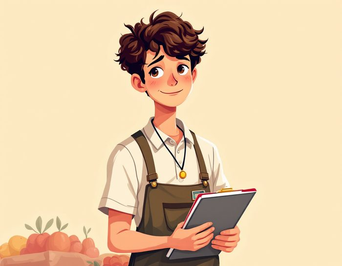
Ben
nineteen · builds a festival page for strangers
essentials 2 and 3
Sophie
sixteen · builds a meal roster for a hard season
essentials 8 and 7
Daniel
twenty-one · builds his own succession
essentials 3 and 5
The kettle is on, and the bench light is the only one I have switched on. People often ask me why, at my age, I sit up with young people and their strange new tools. I usually say the same thing: I met six of them in one year, and I watched each of them build something real.
Here they are, in the order I met them.
Maya started a dozen things and finished the one that mattered: a daily reading page that she kept up when nobody was watching.
Tomás built a welcome card for the new evening service at his church, so that strangers would know where to sit and who to ask for help.
Grace did her history project honestly. She said plainly where the AI had helped, and then she wrote a one-page honesty rule that her whole class ended up using.
Ben built a festival page for strangers, in a town that never thanked him for it, and he learned to rest like a human being instead of a machine that never switches off.
Sophie had a Nan who had a stroke. She walked to the creek most mornings to think, and when the hardest season came, her family built a meal roster that carried them through it.
Daniel taught Priya, who was thirteen, to build her own page. Then he handed over every key before he left, so that she never needed to ask him again.
I gave every one of them the same rule, and I will give it to you too: learn, build, give.
Learn the thing before you lean on it. Build something small that works, and keep it simple enough to fix on a wet Tuesday. Give it to someone who needs it, and then let them carry it.
I always ask them a question at this point, because a good question does more than a good answer. I ask, "Who will sit with you when this breaks?" Nobody has ever answered "the machine." They name a mother, a pastor, a friend from school, a neighbour with a ladder. That is the right answer.
A saw does not make a cabinet, and an agent does not make a life. The people around you do that, with you, slowly, over many evenings like this one.
The tea has gone cold, and the stool by the bench is still free if you want it. I have left the workshop door open.
Story one
“Be still, and know that I am God. I will be exalted among the nations. I will be exalted in the earth.”
Psalm 46:10, World English Bible
Listen · story one read aloud
32 minutes, male British voice. The other stories follow after review.
At 11:47 on a Tuesday night, Maya Chen lay on her back with her phone held above her face and scrolled past a stranger's sourdough, a cricket highlight, and a video of a dog failing to understand a closed door. Her bedroom light was off. The streetlight outside came through the blind in pale bars across the ceiling.
She knew what was on the shelf without looking. She looked anyway.
The shelf above her desk held the evidence. A green scarf, half knitted, rolled up in a plastic bag from Kmart, with the needles still through it like a bad decision. Below it, a journal from Year 8 with three entries, the last one dated February and ending mid-sentence: Today I was going to tell Lily that. Next to that, a guitar case that had not been opened since Dad bought her the guitar for her birthday, back when she had meant to learn "Riptide" in a week. And tucked behind the case, a card for Nana's birthday. It was sealed, stamped and addressed. It had been there since April. Nana's birthday was in April. This was the problem with Nana's card: it was technically finished, and it had never been posted, which somehow made it worse.
She put the phone face down on her chest and listened to the house. The fridge hummed. Noah's PlayStation was off for once. Mum's bedroom door was closed, the light under it already gone.
You start things, Maya thought, the way she sometimes thought about herself, as if reading a report. You start everything. You just don't do the next bit.
She did not want to be a person who started things. She wanted, quietly and with no one to tell, to be a person who finished them.
At breakfast the next morning, Mum was putting the lunchboxes together with the grim efficiency of a primary school teacher with a staff meeting at 8:15. She didn't look up.
"Which one's on the list today?"
"Which list?"
"Your list of things you're going to finish." Mum slid a muesli bar into Noah's bag without asking him. "The scarf?"
"Maybe."
"You started that scarf in Year 8."
"Mum."
"I'm not having a go." Mum did look up then, with the look she gave Year 3 students who had clearly done their homework on the bus. "I just think it would be nice to see you put a needle down and pick up something different, that's all. Something you've decided to finish."
Noah, who had been pretending to be deaf, said through a mouthful of Weet-Bix, "She did the first two rows of the scarf, that's like a lot."
"Thank you, Noah," Maya said.
"You're welcome."
Mum put the lunchboxes on the bench and kissed the top of Maya's head on her way past, quick and light, the way she did when she'd decided not to say the rest of it. Maya watched her go and felt the small, hot embarrassment that always came when someone had seen her clearly and been kind about it.
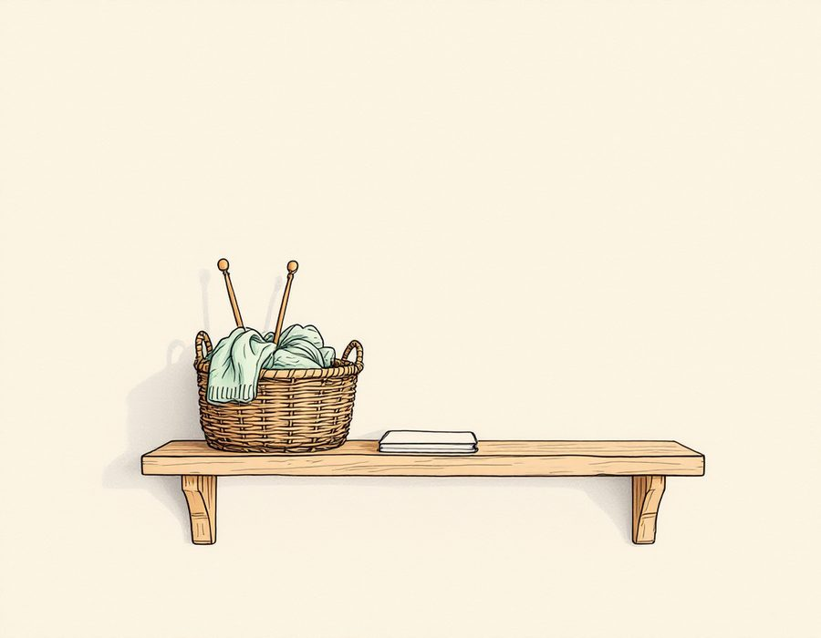
Youth group was in the back hall of Brandon Park Community Church on Wednesday nights, under the fluorescent lights that made everyone look slightly ill. Sasha, who was twenty-four, ran it with a whiteboard, a bag of Tim Tams that disappeared within ten minutes, and an absolute refusal to pretend she knew everything.
"Okay, quick one before games," Sasha said, leaning on the table with her arms crossed. "You've probably heard the church has been trialling the assistant thing. Some of you have been asking me about it in the car park, which is fine. We've got three families who've been using it for a few weeks now, and I want to say honestly what I think about it, and then you can all ask your parents whatever you want."
A few of the boys groaned. Lily, sitting next to Maya, made a face.
"Here's what I think," Sasha said. "It's not a friend. It's not a pastor. It doesn't pray for you, and if it ever tried to be your best mate I'd take the laptop away. It's an assistant that lives on your family's own computer, and it helps you with small stuff in the day. Mostly it asks you questions. It's been a bit like a workshop tool for some of the people I know. Your parents can see everything, and they should."
"Can it do my maths?" someone called.
"It can ask you what you're stuck on, which is more annoying but better for you." Laughter. "Anyway, if your family wants to have a look, I'm running a setup night for anyone who wants to bring a parent. It's an hour at your kitchen table, not a sales thing. Nobody gets signed up for anything."
Maya was half listening, staring at the whiteboard where someone had drawn a fish with a face. Then Sasha said, almost to herself, "And honestly, some of the best stuff has been people using it to actually follow through on things they've been meaning to do for ages. Nothing huge, just small, real things."
Something in Maya's chest turned over, unwelcome.
In the car on the way home, Mum drove with one hand, the radio low, and said, "What did you make of the lady with the Tim Tams?"
"She's alright."
"You're thinking about the assistant thing."
"I'm not thinking about anything."
"Mm." A long pause at the lights on Warrigal Road. "I'm sceptical, you know. I don't want some machine telling you what to think about God, or about your body, or about anything that matters."
"I know."
"But I'm also curious," Mum said. "I'd like to have a look together. Not because I'm going to say yes to anything you haven't thought about. Just to have a look."
Maya turned to the window so Mum wouldn't see her face do anything. "Okay," she said. "Yeah. Okay."
The setup evening was on the Thursday after next. Dad was on a late shift at the hospital, so it was just the three of them and the laptop, which Mum had cleared off the kitchen table along with the bills, the school newsletter, and a dried-out bunch of basil nobody had admitted to buying.
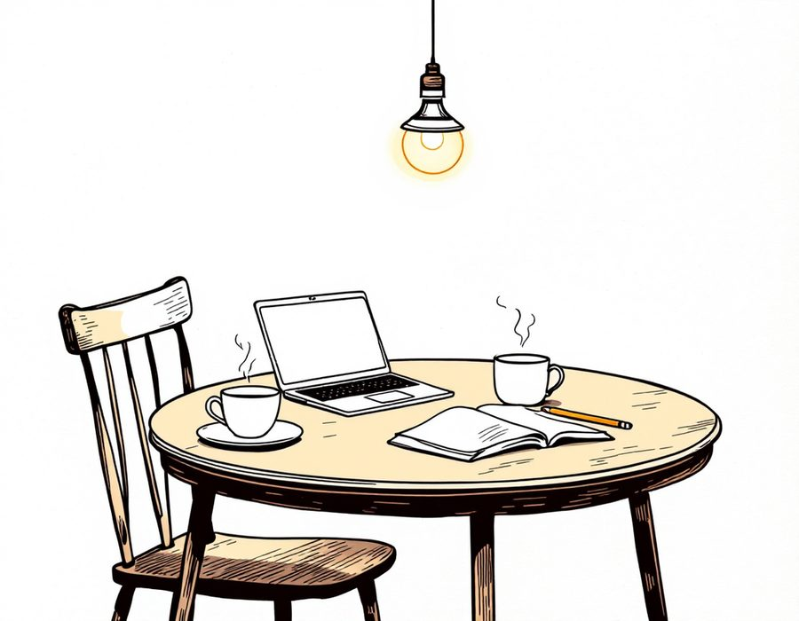
The walkthrough was a document Sasha had printed out, folded into quarters, with a coffee ring on the front. It was surprisingly plain. Step one: install from the official page on your own laptop, not a phone. Step two: create the household account with a parent's email. Step three: set the three daily times. Step four: read the family briefing together.
Noah wanted to know if it could tell him the footy scores. Mum said no. Noah said that was stupid. Mum said it was not her job to be interesting to a twelve-year-old at seven o'clock on a Thursday, which made Maya laugh, and that loosened everything up.
The family briefing was the strangest part. The screen went plain and white, and in neat black type it set out what it was and wasn't. It would never scold. It would not hold secrets from parents. It would send them to living people, family, church, doctors, counsellors, for anything a machine shouldn't carry. Mum read the whole thing twice, out loud the second time, in her Year 3 reading voice. At the bottom there was a small button labelled Parent window, and when Mum pressed it, a second panel slid open showing everything Maya had typed, which was nothing yet, and a log of the setup.
"Right," Mum said. "So I can see it all."
"That's the deal," Maya said.
"I know. I'm just saying it out loud so I don't forget I can."
They set the times. Morning Minute at 6:45, because Maya needed to be out of bed by 7:05 and no earlier, the Check-In at five, the Planning Session at nine. Then the screen cleared and a single line of text came up, unhurried, with the cursor blinking after it.
What do you want to be able to do by Christmas?
Maya looked at it for a long time. Noah leaned over her shoulder and said, "Just say 'win the footy grand final,'" and Mum said, "Noah, go and get your bowl," and he did, grumbling.
She typed be someone who, and then deleted it, because it sounded like a poster in the school library. She typed play guitar, and deleted that too, because it was a lie of a kind, and the guitar case was staring at her from the back of her head. She typed finish something, and stopped.
It was small and true, and she was embarrassed by how much it hurt to write.
She pressed enter.
The reply came back after a second: That's a good thing to want. Is there one thing you'd like to finish first, or would you rather start by noticing what gets in the way?
Mum read it over her shoulder, and said nothing for a while, and then said, "Huh," which in Mum's language was something close to respect.
On Monday, the first morning, the phone buzzed on the bedside table at 6:45 with a soft chime, and a small grey panel opened on the laptop Maya had left open on her desk the night before. Under a play icon was a single line of text: Morning Minute, about two minutes. Read or listen.
She pressed play. A calm voice, neither a man's nor a woman's, said, "Good morning, Maya. Here is your plan for today. You have a Maths test at ten, a science lab in the afternoon, and training after school. You also said you'd like to read a little each day. Try not to rush the first bit of the morning. Here is a line for you."
Then the text appeared on the screen under the play button:
being confident of this very thing, that he who began a good work in you will complete it until the day of Jesus Christ.
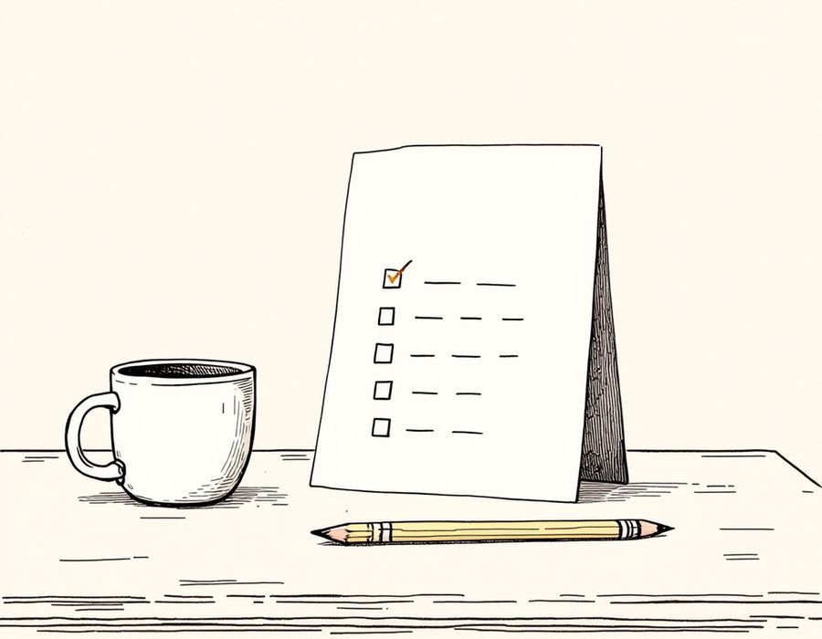
Philippians 1:6, World English Bible
Maya lay in bed and read it twice. Her first thought was that it was a little too neat, like something on a mug. Her second thought was that it had come from a machine that had no idea she had a half-knitted scarf in a plastic bag, and she didn't know what to do with that.
She got up at 7:04, ate a rushed Weet-Bix, drank her Milo standing up at the bench, and went to the Maths test. She got eleven out of fourteen, which was fine.
On Tuesday she read the verse again and didn't think about it at all, and on Wednesday she ignored the Morning Minute completely. She turned the volume down to nothing and let the grey panel sit there blinking while she brushed her teeth, and when she finally looked at it on the bus, the little dot next to it said missed, not failed, which was somehow worse and better.
On Thursday at five o'clock, while she sat at the kitchen table pretending to do her science write-up, the Check-In arrived.
Hi Maya. One question for the afternoon: what was something you started this week and didn't finish, and do you want to finish it?
She looked at it for a long time. Noah was yelling at the telly in the next room. Mum was not home yet. The kettle was cold.
She typed: The scarf. Also the card for Nana. It's been sitting there since April and I keep telling myself I'll post it when it's perfect, which is ridiculous because it's already fine.
The reply was brief. That's an honest answer. Do you want to post the card this week, or is the scarf the thing you'd like to work on first?
She sat back. It hadn't told her she was being silly. It hadn't said that's so relatable or you've got this. It had just asked her which one.
The card, she typed. Probably the card.
Okay. Would it help to write it tonight and post it tomorrow, so it's out of the house?
She laughed out loud, alone, in the kitchen. Then she got up, went to the bedroom, dragged the card out from behind the guitar case, and sat on the floor with a pen, reading the envelope as if it might tell her what she'd been afraid to write.
On Saturday night, the Planning Session arrived at nine. It was a longer message than the others. It set out her week in a plain list: Sunday rest, Monday Maths revision, Tuesday training, Wednesday youth group, Thursday science, Friday a sleepover at Lily's if her mum agreed, Saturday the footy with Noah in the afternoon. Each day had a single line that the assistant had drafted for her morning. Under it was a box:
This is a draft for tomorrow. Change anything you want. Nothing happens until you say so.
She had never seen her week laid out like that. It was like looking at a map of a suburb she lived in but had never visited from the outside. She moved Maths revision to Monday afternoon instead of Monday night, because she was always too tired after training. She cut the line about reading before school and rewrote it as read one chapter before bed, because she knew she would forget in the morning. She added post Nana's card to Sunday, underlined it in her head, and then, because the box let her, typed it in.
She pressed accept. It was the first time in her life she had edited her own plan and felt like it was hers.
The second week was harder.
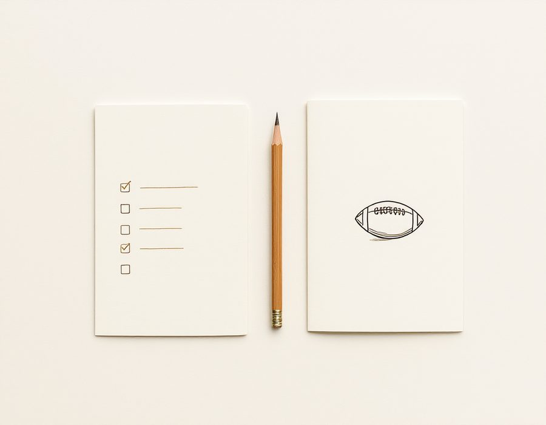
On Tuesday she missed the Morning Minute because she was lying in bed with the blind down, unable to face the day. On Wednesday she missed the Check-In because Lily rang and they talked for two hours about a boy in Year 11 who might or might not have liked Lily back. On Thursday she didn't open the Planning Session at all, and by Friday morning the grey panel was a column of little dots, each one a small silent failure.
On Friday night she sat at the kitchen table with the laptop open and typed, before she could stop herself: I'm a mess. I've missed everything this week. I think it's pointless.
She waited, half expecting a lecture on consistency or a cheerful pep talk. The reply was calm.
Thanks for telling me. You haven't lost anything. Mornings can be hard, and some weeks are heavy. Would you like to start again tomorrow with just the Morning Minute, or do you want to pick a smaller thing first? Also, is there someone in your house or at church you could talk to about how this week has felt? Your mum can see this conversation, and I think she'd want to know you're finding it hard.
Maya sat very still. Then she closed the laptop halfway, went and found Mum in the lounge with a stack of spelling tests, and sat down on the arm of the couch.
"I missed a lot of stuff this week," she said. "The app thing. The mornings."
Mum put down her red pen. "Okay."
"It says you can see it. It told me you'd want to know."
"I do want to know." Mum looked at her for a long moment, the way she looked at a kid who had come in crying with a story that didn't quite make sense yet. "Are you alright, Maya? Not the app. You."
"I don't know," Maya said. And then, surprising herself, "I think I'm just bad at things that aren't exciting for the first week."
"Most people are." Mum patted the cushion beside her. "Come here."
Maya came and sat, and Mum put an arm around her, and they didn't say anything else about it for a while. Upstairs, the laptop was still open on the desk, but it didn't ask her anything. The next morning, at 6:45, the Morning Minute chimed. It was one sentence long.
Good morning, Maya. Start small today, and that counts.
She read the verse under it, the same one, and this time she saw it differently. He who began a good work. It didn't say she had done the work. It said someone had started it, and was still at it.
The idea for the page came, of all places, on a Sunday afternoon when she was lying on the floor of her room with the Gospel of Mark open on her chest.
She'd been reading it since the Tuesday after the bad week, a chapter a night, when she could manage it. The Morning Minute kept giving her one verse a day, and she had found herself wanting more than a verse. She wanted to read the whole thing, the way you watch a whole film instead of the trailer. Start to finish. No skipping the bits that were hard to read, like the locusts and the fig tree, which she had always wanted to skip.
She opened the laptop and typed: I want to read the Gospels properly, start to finish. Matthew, Mark, Luke, John. No skipping. I keep getting bored halfway and stopping.
The reply came quickly. That's a big, good thing to want. Before we plan it, can I ask: do you want to read all four at once, or one at a time? And what would make it easy to see that you'd done today's reading?
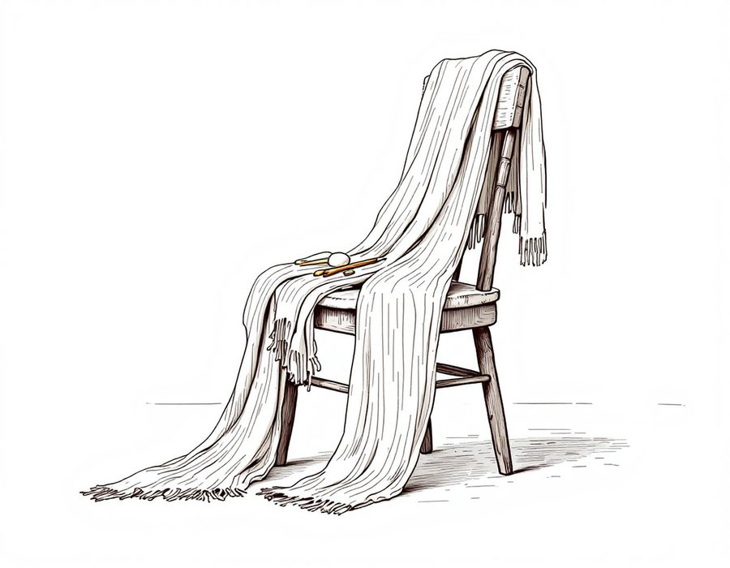
She thought about it for a while. One at a time. Mark first, it's the shortest. And I want to see it. I want to tick it off.
Would you like to build a simple page for it, something you open each morning with your Milo? I can help you make it on your own account, saved on your family's computer. It only needs to be small. One evening is enough for something simple, and you can finish it tonight if you want to.
Maya stared at the word finish. She typed yes, and then, because it was her page, wait, what does it actually look like?
Let's decide together. Here's what I'd suggest for a first version: the day's passage at the top, a tick box for each day, and a line underneath where you write one thing you noticed. Nothing else. Does that feel right, or would you change something?
She laughed quietly. Nothing else. Yes. That's exactly what I want.
They built it one question at a time, which was the only way she would have managed it. The assistant asked what she wanted the title to say, and she typed The Morning Page, then felt silly and changed it to Mark, Day by Day, then changed it back. It asked what colours she liked, and she said she wanted something calm, not Christian-bookshop beige, and not pink, and the assistant offered three options with names. She picked the sage green, and then a warm yellow for the tick, because yellow was what the sun looked like at seven in the morning when she was walking Noah to the school gate.
It asked her how she wanted the ticks to work, and she said she didn't want anything that would beep at her or make her feel like a failure if she missed a day. So they made the tick a simple box, and if it was empty the page just waited for her, without a red mark or a sad face or anything else. When she asked whether it would remember what she'd written, the assistant explained that it was saved as a plain file on the family computer, that her mum could open it, and that nothing about it lived anywhere else.
Mum came in around nine with a cup of tea and sat beside her on the bed without asking what she was doing. She watched the screen for a while, then said, "Show me when it's done."
It was done by ten. It was a plain page with a sage green background, a heading that said Mark, Day by Day, a little passage box that would fill in with the reading each morning, a row of tick boxes for each chapter, and a space below for one line. The first passage was Mark 1, and the first line was empty.
"That's it?" Mum said.
"That's it."
"It's lovely," Mum said, and meant it. "It's yours."
Maya opened it on her phone and then on the laptop, and the page loaded in under a second, every time. She ticked the first box and watched the yellow fill in. It made a tiny, ridiculous bit of satisfaction rise up in her chest, and she was not embarrassed by it at all.
Three weeks later, there were twenty-one ticks on the page.
She had missed two days in the middle, one on a Wednesday when she had a bad headache, and one on a Friday after a fight with Lily that she had been meaning to apologise for all week. On both days the box had waited, empty, and the next morning she had read two chapters instead of one, feeling strange and proud and slightly silly about it. The line under each tick had gradually become less of a chore. Some days she wrote Jesus was really annoyed at the disciples and I felt bad for them. Some days she wrote Didn't understand the parable of the sower, read it again tomorrow. One day, after the paralytic let down through the roof, she wrote Friends who carry you when you can't do it yourself, and then looked at the sentence for a long time before she left it.
The scarf was still on the shelf, rolled in its bag. She had not touched it. But she had posted Nana's card on the Sunday after the bad week, and Nana had rung back on the Wednesday, crying a little and laughing at herself, to say it had been the best thing she'd got in the post all year, and what had Maya been doing with a stamp that long?
On the Saturday of the twenty-first tick, Noah wandered into her room while she was reading, flopped on her beanbag, and said, "What's that on your phone?"
"My reading page."
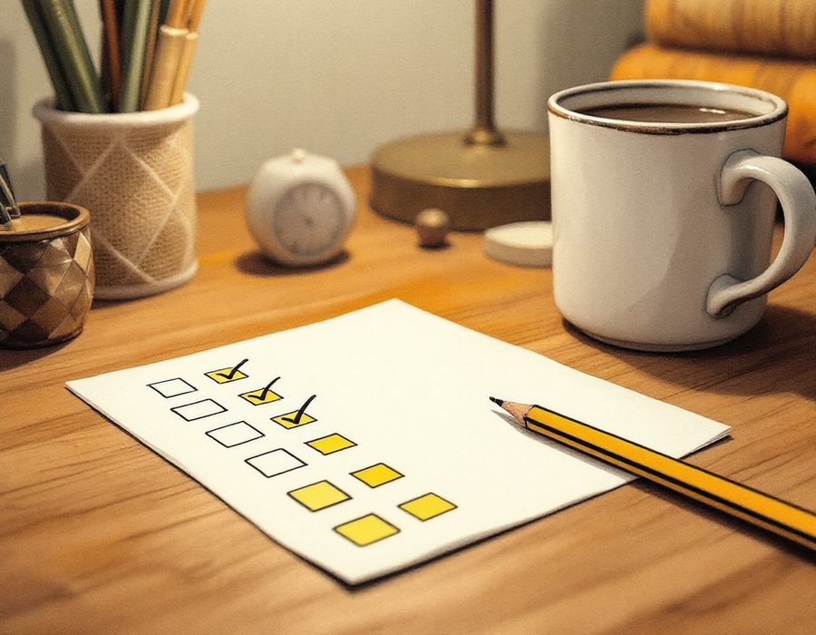
"Can I have one?"
She looked at him, twelve years old, with a footy sock hanging off one foot, and realised he was asking for the same thing she had been asking for, in his own way, all along. "What are you reading?"
"Nothing," he said, and then, slowly, "The Whole Story of Footy, the book Dad got me. I've only done like four pages."
"Okay," Maya said. "Let's make you one."
It was a bit like teaching someone to ride a bike, except Noah kept saying the questions were stupid and then answering them with great seriousness. The assistant asked him what the title should say. He said Footy Book Day by Day. It asked how many pages he wanted each morning. He said four, and then, when Maya raised an eyebrow, said two. He picked blue, then changed it to black because blue looked like a Western Bulldogs guernsey, which was the wrong team. Maya sat beside him with her knees up and watched him type, one clumsy finger at a time, and felt a small, warm surprise that she was the one who had got him here.
When it was done, Noah stared at the screen. "Can I tick it now?"
"You can tick it when you've read it."
"That's not fair."
"It's the only fair way," she said, and he made a face and then grinned.
On Monday morning, a little note from the assistant arrived in Noah's account, and a copy went to Mum's, which the assistant had asked permission to send: Noah has built a reading page for the first time today. If you'd like to talk with him about the book, I'd be glad if you did. Mum read it at the bench and said, "Well, that's the best thing I've heard this year," and went upstairs to ask Noah which bit of footy history he'd liked best.
At youth group on Wednesday, Sasha stood by the whiteboard and said, "Maya's got something she wants to show you," in a voice so offhand that Maya knew she had planned it. Maya stood up with her laptop, feeling her ears go hot, and showed them the page. Sage green. The heading. The yellow ticks. Twenty-one of them, lined up like a row of little suns.
"It's just a reading page," she said. "It's nothing special."
"It's special if you finished it," said Lily, who had apologised on the Monday after the fight, in the car park, with two Maccas coffees and a face like someone who had practised the speech all the way over.
Pastor Graham, who had been leaning against the back wall with his arms folded, said, half joking, "I don't suppose that thing could do our welcome card for the new evening service? We've been trying to get it done since Easter, and the printer's been eating my drafts."
"It could probably do a page," Maya said. "I don't know about a card."
"Would you help us find out?" he said. "We'd pay you in Tim Tams."
The room laughed, and Sasha rolled her eyes and said, "Pastor, it's a fifteen-year-old's project, not a volunteer roster," and Maya said, "I'd have to ask Mum," and Pastor Graham said, "Good. That's the right answer," and went back to his coffee.
On the Saturday night, Maya was in bed by 10:30, which was her own choice. Nobody had told her to. She lay on her side with the blind up and the streetlight coming through in bars across the ceiling, and she opened the page on her phone for the last time that day.
She had read Mark 9 that evening. It was the part with the hard sayings about hands and feet and cutting things off, and she had not wanted to read it, and she had read it twice anyway. She ticked the box. The yellow filled in, small and bright.
Under the tick was the empty line. She had written something on every line for three weeks now, and this one was no different. She thought about it for a while, the way she thought about everything now, slowly, letting the sentence come before she typed it.
Read the hard bit twice. Still here.
She pressed save. The page closed itself with a soft little click. On the shelf above her desk the scarf sat in its plastic bag with the needles still through it, not finished, not forgotten. She looked at it for a moment, and then she turned off the lamp, pulled the blankets up to her chin, and lay in the dark, listening to the house settle around her. Down the hall, Noah's light was still on. Mum's was already off.
She was asleep before she could decide whether she was proud of herself, which, she realised afterwards, was probably the best way for it to go.
The assistant in this story is a real kind of product. It is a personal AI assistant that a family installs on its own laptop, not a phone app or a cloud service, and it works best when a parent is in the room from the start.
Setup takes about an hour, usually one evening at the kitchen table, following a printed walkthrough. The family installs it on the household computer, creates an account with a parent's email, and reads the family briefing together. A parent can open a window that shows everything the young person has typed and every message the assistant has sent. Nothing is hidden from the adults in the house.
The Morning Minute is a short spoken audio plan of about two minutes, with the same plan written underneath as text and a single verse at the end. It arrives at a time the family chooses. It does not nag. If you miss it, it simply records that you missed it.
The Afterschool Check-In arrives around five o'clock as a short text with one question to sit with. The Planning Session comes at night. The assistant drafts tomorrow, and the young person edits it, keeping, changing or deleting anything. Nothing happens until she accepts it.
The morning page in this story was built in a single evening, with the young person making every decision, including the title and the colours. It is a plain web page saved on the family's own account. A page like this takes one evening to finish because it is designed to be small enough to actually finish.
One honest line: the assistant did not make Maya read. It asked her questions, held the rhythm when she couldn't, and sent her back to her mum when the problem was bigger than a schedule. The rhythm held her until she could hold it herself.
The essentials this story lived: 1, Silence and Stillness; 6, Knowledge Without Wi-Fi.
Story two
Therefore accept one another, even as Christ also accepted you, to the glory of God.
Romans 15:7, World English Bible
## Grey
The laptop sat on the kitchen bench between the Milo tin and Dad's reading glasses, and at twenty to seven on Sunday morning it did what it did every day, which was speak in a voice that sounded like nobody in particular.
"Good morning, Tomás. Today's verse is from Hebrews, chapter ten, verse twenty-four. The World English Bible puts it like this: 'Let us consider how to provoke one another to love and good works.' That's the whole minute. Is there one person at church you could give a good word to today? You don't have to decide now."
Tomás read the text under the audio as it played, because he read everything twice. He had a spoon in one hand and a bowl of Milo going cold in the other. "Provoke," he said to the empty kitchen. "Nice."
"Are you talking to the computer again?" Mum appeared in the doorway in her church cardigan, already holding her car keys like a threat.
"It talks to me first. It's very rude."
"It's a family tool, and you're a family member, so it's only polite." She took the spoon out of his hand, stirred his Milo, and gave it back. "Is that the one that wants you to write things down?"
"It wants me to think about who I'm going to be nice to."
"Well, I'd like you to be nice to the car."
The Riverside Fellowship car park was already half full when they pulled in, and Tomás went straight to the foyer doors the way he always did, because the corkboard was there and he could never walk past it without noticing. It was the first thing a person saw on the way in, or it should have been. Instead it was the welcome card.
The welcome card had been pinned to that board for as long as Tomás could remember. It was a photocopy of a photocopy of something printed in about 2011. The church drawn on it was a line sketch with no ramp, and the phone number had the old area code. The service times said 9:30am, with a note in pen beside it that said (10am in school hols), and the school holidays had been over for a year. Four pins held it up, and one of them was bent so the whole card hung crooked, like a picture in a hallway nobody cared to straighten.
Lola Tess was squinting at it with her handbag on her arm. She was eighty-one and did not wear her glasses to church, on principle.
"Tomás, which time is the service?"
"Ten, Lola."
"The card says half past nine."
"The card's wrong, Lola."
"Then why does it still say it?"
He didn't have an answer for that, and while he was looking for one, a young couple came through the foyer doors. They were about his parents' age, maybe younger, with a baby in a sling and a toddler who wanted to run. They stopped at the board. The man read the card, frowned, and looked at the woman. The woman looked at the baby and then at the crooked card. Then they turned around, said something quiet to each other, and walked back out into the car park.
Tomás watched the doors close behind them. Something in his chest went tight and a bit hot, the same feeling he got when someone ran a footy field with a ball they'd been told not to touch. It was not quite anger. It was closer to the feeling of seeing a good thing done badly and knowing exactly how to fix it.
He straightened the card with one finger. It sprang back crooked.
"Lord," he said under his breath, not quite a prayer yet. "Those people. I don't even know them."
The bent pin stayed bent. Lola Tess tapped his arm with her handbag and said, "Come and sit with me. I want to see who's wearing the terrible shirt this week."
## The Ask
Pastor Graham found him on the stairs after the service, which was not hard, because Tomás was trying to sit on the bottom step and look busy with his phone.
"You're the poster guy," Pastor Graham said. He had a coffee in each hand and gave one to Tomás without asking. He was a big, soft-spoken man in his fifties, and he laughed easily. "The camp poster. Forty kids turned up to the cricket camp because of that poster. I had three boys ask me if the surfing was real."
"It wasn't," Tomás said. "It was a picture from the internet."
"Well, the surfing wasn't real, but the camp was. Come to the office for a minute."
The office was small, bright and a bit untidy, with a window that looked over the car park and a sign on the wall that said Please Knock, Even If You Are Family. Bronwyn, who had run the office for nineteen years, waved at him from behind her monitor. Pastor Graham sat on the edge of his desk, which was a thing he did when he was about to ask for something.
"We're starting an evening service," he said. "The Six O'Clock. Five weeks from Sunday. It's for people who can't do mornings, and for people who've never come at all. Some of them will walk past that board and not come in, and I'd like that to change."
"Okay."
"And I'd like the welcome card fixed. Properly. Not a bit of tape on the old one." He gestured at the corkboard through the glass, where you could just see the bent pin. "You've got a laptop, an eye for a font, and an opinion about most things. I thought of you."
Tomás pushed his glasses up his nose. He did that when he was thinking, and when he was trying not to say something quick. "I make posters for camp," he said. "For kids. For kids who already like me. I don't know what grown-ups need from a card. I don't know who the people are."
"That's the honest answer," Pastor Graham said. "I'd still like you to find out."
"What if I get it wrong?"
"Then we'll find that out too, and you'll fix it. That's how it goes with everything."
Tomás looked at his coffee. It was too sweet, the way Pastor Graham always made it, and he drank it anyway.
"Give me a day," he said.
"Take the week," Pastor Graham said. "And don't guess. Ask people."
That night, after dinner and the dishes, Tomás sat at the desk in his room with the laptop open. The Planning Session came up at nine, the way it always did. The assistant showed a little pale window on the screen and waited, the way a patient teacher waits for you to find your pencil.
He typed slowly, because it was late and he was tired. Pastor wants me to redo the welcome card for the evening service. I don't know who it's for.
The reply came back in plain text.
That sounds like a real job. Thank you for telling me the part you're unsure about, because that's where most of the work is.
Who do you picture reading it?
Everyone, Tomás typed.
Everyone is a lot of people to design for at once. Can you pick one person who might walk through those doors for the first time? Someone who has never been inside. What do you think they'd see first, standing in the car park?
He thought about the young couple with the baby, turning around. He had no idea what they had been thinking. He had no idea what their names were.
I don't know, he typed. I don't know what they'd need.
Then the first job isn't designing. It's finding out. You could ask the office what's actually true right now, like service times, parking, the ramp and the kids programme. You could ask a few real people what they'd want to know before they walked in. I can help you write those questions down and keep the answers in one place. I can't tell you what a stranger needs, though. Only people who have been strangers can tell you that, and you'll have to go and ask them.
Tomás sat back. He liked that it did not pretend. He had half expected it to hand him a finished plan and a font, and it had handed him a list of people instead.
Can you help me write the questions? he typed.
Yes. Let's start with three for the office and three for people. Keep them short enough to ask out loud.
They wrote them together. It took twenty minutes, and at the end he had a list in a document called Welcome Card Questions and a note at the bottom that said ask Bronwyn Monday. Then he closed the laptop and sat on the edge of his bed, and before he could decide it was silly, he prayed.
"God, I don't know if I'm the right person for this," he said quietly, with his hands loose on his knees. "I'm not even sure I'm good at it. But I'm tired of looking at that card and doing nothing. Help me make it honest. Help me think about the people who are going to read it, and not just about how it looks. Amen."
He didn't feel anything dramatic. He just felt a bit lighter, the way you do when you put down a bag you didn't know you were carrying.
## Questions
Bronwyn had a diary with a cover like an old Bible, and she kept it on the counter in the office beside the urn. On Monday morning Tomás knocked on the door frame, although the door was open, because the sign said so.
"Morning, Tomás. You've got your serious face on."
"Pastor said I should ask you some things."
"Oh, he said that, did he?" Bronwyn took off her reading glasses and let them drop onto their cord. "Go on then. Ask me anything. I've been waiting nineteen years for someone to ask me anything."
He read from his phone. "What time do the services really start, and when do they finish?"
"Ten o'clock start, doors open at quarter to. Finishes around eleven fifteen, then morning tea. Morning tea is not optional."
"What does the Six O'Clock start at?"
"Six. Doors at half five. It'll be shorter, and there's no morning tea, because they'll have eaten dinner, and people hate that. We'll do a supper table instead, and I'll pretend I didn't say that."
He typed it down. "Parking?"
"Two accessible bays right by the side gate, and they're the ones nobody ever uses because they're too far from the doors. Everyone parks in the bay by the bins. Tell them to park by the ramp and walk the path, because the path is flat." She tapped her desk. "Put that in bold. People would rather walk ten metres on a flat path than find out the bins are a bay."
"Ramp access?"
"The side gate's on the left of the carpark, between the church and the hall. It's open during services. Our ramp goes up to the side door, and that's the door I'd want people to use if they're coming in a wheelchair or with a pram. The main doors are fine, but there's a step at the top that catches the wheels."
"Is there a code for the gate?"
"There's no code, love, it's open. We locked it once in 2017 and a man in a wheelchair ended up going round the back and through the bins." She shook her head. "Don't put any codes on it, ever."
"Kids programme?"
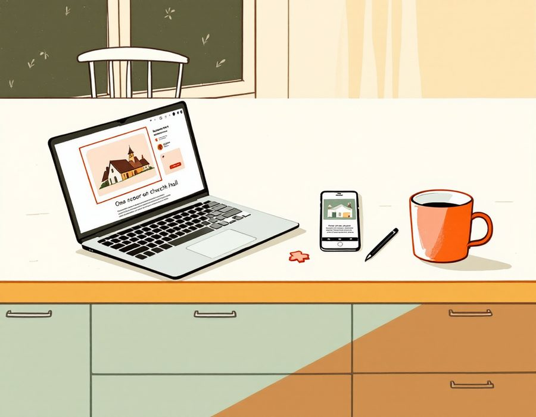
"Little Lights for under-fives in room three, down the hall past the kitchen, and the Sunday school stuff in the hall. We'd love parents to sign their kids in at the table by the door, but that's a bit of a fight, so put that in plain words and not with any shouting."
Tomás grinned. "What do people wear?"
Bronwyn laughed properly, and it bounced off the filing cabinet. "Tell them that, Tomás. Tell them that's the first question everyone asks and nobody says. Tell them nobody cares. People think they have to wear a suit, and then they get here in a suit and everyone's in shorts."
He wrote Wear what you wear and underlined it twice.
"Anything else?" she said.
"What happens at the end?"
"Morning tea. Urn's on at half ten, and there's a plate of biscuits that I buy from the servo because the Coles one's stale." She put her glasses back on. "Now, you're going to ask me about the bins next, and I'm not talking about the bins."
He laughed and went out into the car park feeling like he had won something, although he could not have said what.
Lola Tess lived in a unit near the shops and came to Sunday lunch at Mum's every week, which meant that on Sunday afternoon she was sitting at the kitchen table with a plate of chicken adobo, a cup of tea, and Mum's good serviettes tucked into her collar. Tomás took a seat beside her and his phone out.
"Lola, I need to ask you something for church."
"You're going to put me on the card."
"No, I'm not putting you on the card."
"Good. I'm not ready to be famous."
"It's about the card," he said. "The welcome card. If you were new, and you'd never been to Riverside before, what would you need to know before you walked in?"
Lola set down her tea. She looked at him over her glasses, which she had put on to eat, and then took them off again, which meant she was going to think properly.
"Where I'm allowed to sit," she said. "Whether there's a chair near the door so I don't have to walk all the way to the back. Whether I can bring my walker up to the front or if it'll be in the way. Where the toilet is, before I need it. Whether anyone will say hello, or whether I'll just be left to stand there with my handbag like a lost parcel." She tapped the table. "What they sing, so I don't look like a fool. Whether I'll be made to stand up and say something about myself. And whether they'll mind if I cry."
"Would they mind?"
"Tomás, I cry at the Milo advertisement."
Mum laughed from the sink, and Lola smiled and went on. She was quiet for a while, turning her cup in its saucer.
"When I came to Brisbane from Iloilo, in 1994," she said, "I stood at the door of a church for ten minutes. Ten minutes. I had my good dress and my bag and I didn't know a single soul. I was going to turn around. Then a woman came out of the kitchen with a plate of pancit and said, 'You must be hungry, sit here with me.' And she sat next to me the whole service and held my hand when I didn't know when to stand up." She picked up her tea again. "That's all I needed. A plate and someone to sit beside. That's what I'd want the card to say, if it could say it."
Tomás wrote it down exactly as she said it, and then sat there for a moment without writing anything else.
"Thanks, Lola," he said.
"Don't thank me. Put a plate on the card."
He didn't put a plate on the card. But he did type a seat near the door, and someone to sit with you in the list, and later that night he asked the assistant to read it back to him so he could hear how it sounded.
## The Morning Minute
On Tuesday the Morning Minute came on while Tomás was eating toast over the sink, and the voice was calm and familiar, the same as always.
"Good morning, Tomás. Today's verse is from Romans, chapter twelve, verse thirteen. The World English Bible says: 'contributing to the needs of the saints; given to hospitality.' Hospitality is one of the oldest things people in your church can do, and one of the hardest to explain to someone who has never been welcomed. Is there a person you've been meaning to invite somewhere? Maybe that's a question for later."
He stood still with the toast halfway to his mouth. He thought about the woman with the pancit, whose name he didn't even know, and about Lola's hand on her handbag at the door in 1994. He thought about a plate. He did not think about the card at all for a moment.
"Okay," he said quietly, mostly to himself. "Okay, I hear you."
He had a list of people now, and he did not want it to just be a list.
Saturday was a working bee, and Tomás had his laptop in his backpack, his phone in his pocket, and Dad's old Samsung with the cracked corner in the other pocket, because Dad had said it was the phone that most people in the church would have, and he was right. Dad was out the back with the mowers. Tomás walked the car park with a notebook and the list, and that was where he found Des Harrigan.
Des was in his seventies and had been a builder for fifty years. He wore a canvas workshop jacket with three pens clipped to the pocket, and his hands were the biggest and most weathered Tomás had ever seen, the knuckles like walnuts and the nails cracked. He was kneeling by the side ramp, checking the handrail bolts with a spanner. He did not look up when Tomás came near. He just said, "You're the poster boy."
"Hi, Mr Harrigan."
"Des. Mr Harrigan was my father, and he didn't like me much either." He tightened a bolt and sat back on his heels. "What's the card?"
"I'm redoing the welcome card for the evening service. The one on the corkboard. It's a mess."
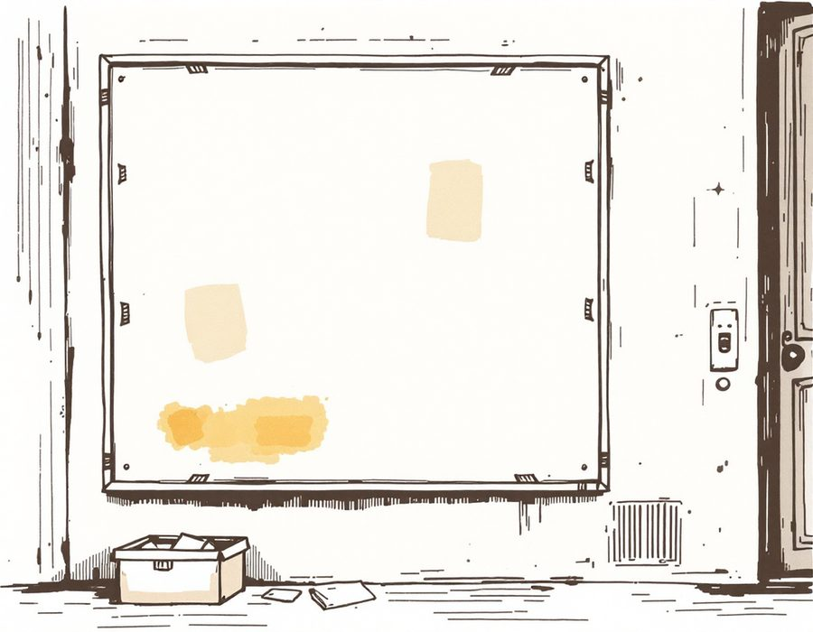
"It is a mess. I've looked at it every Sunday for six years and thought, somebody's got to do something." He nodded at the ramp. "You measured this?"
"No. I took a photo."
"Did you take a photo from the top, where a person in a chair comes up? Or from the bottom, where they're sitting on the step with the kid on their lap wondering how far it is?"
Tomás opened his mouth and shut it again. "The bottom, I think."
"Then you've got a drawing, son. You've got a picture of what you see, which is not the same as what somebody needs to know." Des wiped his hands on a rag from his jacket pocket. "Have you had anyone in a chair look at your card?"
"No."
"Anyone with a pram? Anyone who's never been in a church in their life?"
"No."
"Well." Des stood up, which took a moment, and Tomás reached out a hand and then didn't, because he could tell Des would not want it. "Go and ask someone who's going to use this ramp. Ask them where they'd want to sit. Ask them where they'd want to wait while their wife parks the car. Ask them what they'd want to see on the way up." He picked up his spanner. "Then come back and tell me what you learned, and I'll tell you if it's any good."
He walked off toward the hall, whistling something tuneless, and Tomás stood beside the ramp in the sunshine with his notebook open and nothing written in it.
He prayed then, out loud and a bit self-conscious, with a bloke from the Men's Breakfast going past with a wheelbarrow.
"Lord, I want this card to be good because I'm proud of what I can make," he said. "And I want it to be good because people need it. Show me which one is actually true. And if it's the first one, help me stop."
The wheelbarrow went round the corner. The sun was warm on the back of his neck. He wrote Ask someone in a chair in the notebook and underlined it.
## The Elders
The building committee met on Wednesday night in the hall, and Tomás was there only because Pastor Graham had asked him to bring the draft. He sat at the end of a folding table with his laptop open and his heart going faster than he liked.
Keith Mulvaney chaired the elders, and he had been on the board at Riverside since before Tomás was born. He had a moustache that looked like it had been there since the seventies and a voice that could carry across a cricket ground without a microphone.
"We had a card," Keith said, looking at the screen as if it had personally offended him. "It did the job for twenty years."
"It did the job for people who already knew where they were going," Tomás said.
It came out sharper than he meant. A couple of the older women looked up from their notepads. Pastor Graham didn't say anything, but he raised one eyebrow in a way that felt like a hand on the shoulder.
"Respectfully," Tomás went on, more carefully this time, "the card's a photocopy of a photocopy. The times are wrong. The phone number's out of date. It doesn't show the ramp. It doesn't show the room for the little kids. It's grey and hard to read, and the drawing is of a building that doesn't exist anymore."
"It's still the church," said Keith. "People know the building."
"People who've been coming for years know the building."
"And the colour printing?" Keith folded his arms. "Do you know what eighty copies in colour costs? That's money out of the mission budget, son. That's money that pays for the youth camp you built a poster for."
There was a little laugh around the table, which was not kind, and Tomás felt his face go hot. He knew the answer to that. He had the numbers in his head, and he was about to say them, with a bit of a flourish, when he noticed Keith's face. It wasn't angry. It looked tired and a little scared, the way Dad looked at the bank statements in the kitchen at night.
Tomás closed his mouth. He looked at the screen, and then at the table, and then he said something he had not planned to say at all.
"You're right that it costs money. I don't know everything about the budget. I'd like you to decide the colours and the wording, because it's the church's card, not mine. I'll bring you two versions, a grey one and a blue one, and you can choose."
Keith blinked. "Well. That's … that's fair."
"Thanks," said Pastor Graham quietly, and moved on to the next item.
In the car park afterwards, Tomás sat in the driver's seat of Dad's old Corolla with the engine off and did not start it. The hall lights were still on. He could see Keith through the window, stacking chairs with the other men, looking like he was still not sure what had happened.
"God," Tomás said, with his forehead on the steering wheel, "I was so sure. I talked like I was the one who got to decide. I wanted him to see how clever I was." He breathed out slowly. "I'm sorry. Please help me say it right."
He got out of the car. He walked across the car park to where Keith was loading the last of the chairs into his ute.
"Mr Mulvaney. Keith. Can I say something?"
Keith looked at him for a long moment. "Go on."
"I was rude in there. About the card, and about your budget. I was showing off, and I'm sorry." He swallowed. "You've been here a long time, and you know this church better than I do. I'd like you to be the one who says yes or no."
Keith rubbed the back of his neck. "Son, I don't hate change. I just don't like being told I'm wrong by someone who can't drive yet."
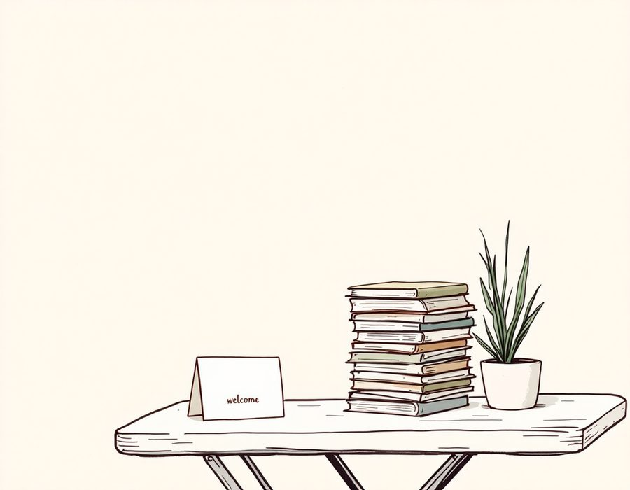
Tomás laughed, and so did Keith, a bit reluctantly, and then Keith said, "Bring me the blue one. But don't make it too bright, the colour can't fight the cross on the sign."
"Deal," said Tomás.
At the elders' vote the following Wednesday the blue card got through, with the cross on the sign used as the colour guide, and Bronwyn wrote the decision in her diary in pen without looking up. Tomás was not even in the room for the vote, and he preferred it that way.
## Print Day
On the Thursday before the Six O'Clock launch, Bronwyn's copier hummed in the office for two hours. Tomás stood beside it with a box of blue card and a plastic tray, feeding in the sheets, one at a time, while Bronwyn read the Sunday roster on the other side of the room.
He had built the card over three weeks, and it was not finished, but it was good. The front was a real photo, taken at the side gate in the evening light, with the ramp curving up to the side door and the church behind it. There were no faces in the photo. He had asked the people in the shot, and the two elders in the foreground had said yes, and a girl from the youth group had said she didn't want to be in it because her hair was a disaster, and that was a yes too.
The inside had three things on it, in big plain letters. When to come. Where to park. What to expect. There was a simple map of the building drawn from Bronwyn's old floor plan, with the side door and the ramp in bold blue, the toilets in green and room three for Little Lights marked with a small star. At the bottom was a QR code that took you to a one-page version on the church website, which Mia, his cousin, had set up for him on her own account, because she knew how to get things to work on websites and he did not.
He had tested it four times on Dad's Samsung. The first time the text was too small to read in the car park. The second time the map was blurry. The third time the QR code opened the wrong page, which he had found out by standing in the foyer and scanning it with the phone while Pastor Graham watched and said nothing, because he was too polite to laugh. The fourth time it worked. Tomás had walked out to the car park and checked it from the back row of the car park, like someone who was about to be tested on it. He'd been surprised at how much he cared.
"Bronwyn," he said, as the last sheet came out of the tray. "Can I ask you something?"
"You can ask me anything. We've established that."
"Does this look like somewhere you'd want to walk into?"
Bronwyn came over and looked at the front of the card, and then turned it over and read the inside, moving her lips slightly the way she did with important paperwork. For a while she said nothing at all.
"You put the bins on the map," she said finally.
"They're not a bay. I checked."
She laughed so suddenly that she had to put a hand on the copier. "Oh, Tomás. Oh, I'm going to use this for everything."
On Sunday night, the first Six O'Clock service began with a foyer full of people Tomás didn't know. The sun was going down behind the hall and the car park lights had come on, and the side gate was open and the ramp was clear, and somebody had put a little sandwich board at the bottom of the path that said Ramp this way, flat all the way! in Bronwyn's handwriting. The supper table had a plate of pancit and a plate of sandwiches, and Sasha from the youth group stood at the main doors with a stack of programmes and her foot holding the door open, and when she saw Tomás she said, "You're the card guy," and he said, "I'm the card guy."
The new card was on the corkboard. It hung straight. Tomás had put it up himself at half past five, with four brand new pins, and had stood back to check it three times before he decided it was finally, honestly level.
At ten to six a small, slow figure came up the side path, very carefully, with a walker that had tennis balls on the front feet and a handbag hanging from the handles. Mum walked beside her with one hand not quite touching her elbow. Lola Tess stopped at the foot of the ramp, looked up at it, and nodded to herself, the way she did when a dish was just what she had ordered at a restaurant.
She came into the foyer by the side door, and Tomás saw her face as she reached the corkboard. She put on her glasses, which were the ones she only wore for reading and for important things, and she read the card from top to bottom, moving her lips.
"Tomás," she said, without turning around. "It says there's a seat near the door, by the pillar, with the arm on the side for the walker."
"It does, Lola."
"And room three for the little ones, past the kitchen."
"Yes."
"It says the car park, and which bay." She tapped the glass of the card with one finger. "And it says you can wear what you wear."
"That's Bronwyn's rule."
"Good rule." She took off her glasses and turned to face him. Her eyes were shining, which meant she was going to cry in front of the whole foyer, and she did not care in the least. "You know what, Tomás? The card told me exactly what to expect. I didn't have to be brave. I only had to be brave enough to read it. Do you understand that?"
He did not trust his voice, so he nodded.
"Now, where is my seat?"
He walked her to it himself, with Mum on her other side. Halfway there, a woman in a yellow cardigan came out from the kitchen carrying a plate of pancit with a fork stuck neatly in the middle. Tomás knew her face. It was Tita Remy, who had been at Riverside since before the old photocopy was printed, and she looked at Lola and her walker and her shining eyes, and then she smiled and said, "Tess, you must be hungry. Come and sit with me."
Lola looked at Tomás over her shoulder. He thought she might laugh, or cry, or both, and she did both, quietly and happily, as she let Tita Remy steer her to the seat by the pillar.
Tomás walked back to the foyer with his hands in his pockets. He did not feel like a hero. He felt like a bloke who had been given a good thing to do and had actually managed to do it. He prayed quietly as he walked, and it was not a long prayer.
"Thank you," he said. "Thank you for Lola. Thank you for Tita Remy. Thank you that the bins are not a bay."
He grinned at the corkboard, and then he went to fetch a plate for himself.
## The Give
Two weeks later, on a Tuesday night at the kitchen bench, the Planning Session came up at nine and Tomás was waiting for it with a notebook open and a pen behind his ear.
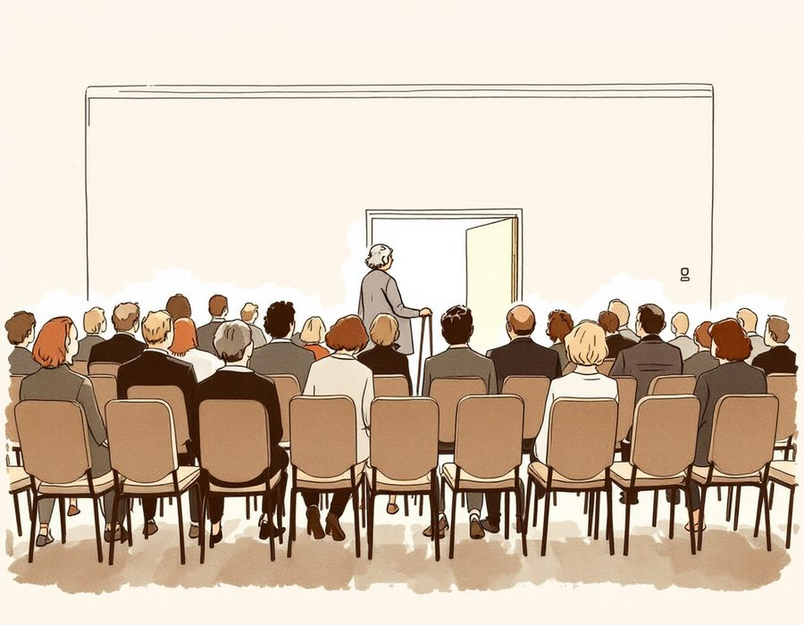
You've been working on something for the church, the assistant said. How is it going now that the card's in use?
He typed for a bit and then deleted it and typed again.
It's going fine. People are using it. But it's going to be out of date in six months. Times change, the phone number changes, the Six O'Clock might move to half past six. And the only person who knows how to change it is me, and I won't be here forever. I'm going to uni in Melbourne next year. I don't want the card to fall apart when I go.
That's a good thing to notice, the assistant replied. What would make it easy for the office to update it without you?
A guide, he typed. One page. Plain words. Where the master file is, what to change, what not to touch, who to ask about photos.
Would Bronwyn or Pastor Graham want to help write it?
Tomás looked at that for a while. Then he typed, Probably. They should have a say. It's their card.
Then the guide might be better as a conversation with them, with a draft to start from. I can help you draft it. I can't decide what the church wants on its own card.
He smiled at the screen, and then he went and got Mia.
Mia was fighting with a tangle of charger cables on the back step when Tomás came out with the laptop under his arm. She didn't look up until he sat down beside her.
"You're the one who's giving it away," she said. "Tell me it's not a trick."
"It's not a trick. The office needs to be able to change it, and I won't be here to do it."
"Melbourne." Mia said the word the way she said anything she thought was a bit fancy. "Very brave. You'll be home at Christmas eating Mum's lumpia and complaining about the trams."
"Probably."
She finally untangled the last cable, plugged the laptop into the wall, and opened a folder she had made for him the week before. It was called Welcome Card (Master). Inside were two files, one a finished PDF for printing and one the editable source with every layer named, so that a stranger could open it and know what each piece was for.
"Okay, here's the thing," Mia said. "I've put it in the Riverside account, not yours. The office can log in, Bronwyn can log in, and Pastor can see it. I set the church as the owner. If you want, you can stay as an editor for a month, but I'd rather you didn't."
"That's the right way round."
"I know it's the right way round. I'm just saying it's weird that it's not yours anymore."
Tomás pushed his glasses up his nose and scrolled to the bottom of the card, to the little strip of grey text he had put there three weeks before, when he was still certain the card was going to make people think he was clever. Designed by Tomás. It was in size six. Nobody would notice it unless they were looking for it.
"Your name's still on the back," Mia said, reading over his shoulder.
He didn't answer. He sat with the cursor blinking after the full stop, and he felt the old hot feeling come up under his ribs, the one that wanted to be seen doing a good job. It was not a sinful feeling, exactly. It was just a small, greedy one, and it wanted the last word.
He put his hands on his knees and looked out at the Coopers Plains sky going orange over the neighbour's fence.
"God," he said quietly, "I want my name on it. I'm not proud of that. I want people to know it was me, and I want to be the one who knew the bins weren't a bay. I don't want to want that. Please take it off me. Help me let it go."
The neighbour's dog barked twice and stopped. Mia was humming something off-key and pretending not to listen.
Tomás highlighted the strip of text, and then, before he could change his mind, he deleted it.
"Ouch," said Mia.
"Yeah."
"You're allowed to be a bit sad about it."
"I know. I'm a bit sad about it." He breathed out. "It's still better."
She bumped his shoulder with hers, which was as close as Mia got to a hug in public, and went back to fixing the QR code, which had started opening the wrong page again.
He wrote the guide on Thursday night, at the kitchen bench, with Dad's reading glasses borrowed for a joke and Mum asking every ten minutes whether he wanted a cup of tea. It was one page. He wrote it in plain words, the way Bronwyn talked.
How to Update the Welcome Card
1. The master file lives in the Riverside account, in the folder called Welcome Card (Master). Open the file there. Do not start a new one.
2. Check the service times with the office every term, and any time they change. Write the date you checked in the notes at the bottom.
3. The phone number is always the office line. Nobody's mobile goes on the card.
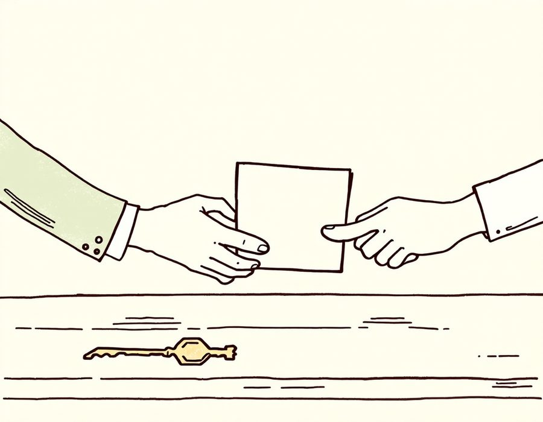
4. Photos: ask every person in the shot before it goes to print. If a child is in it, ask the parents too. If anyone says no, take them out, even if the photo was your favourite.
5. The map: walk the car park and the ramp before you change it. Bins are not a bay. Check the bolts on the handrail once a year, with someone who knows how.
6. Test the QR code and the card on an old phone in the car park before you print. If the text is hard to read from the back row, make it bigger.
7. Ask someone who has never been inside Riverside to read it cold. Ask someone who uses a walker or a wheelchair. Ask someone who has just come in with a pram.
8. Do not put a gate code on the card, or anywhere else. The gate stays open.
Nobody needs to know who made this card. It belongs to the people who walk in the door.
He read it aloud to the empty kitchen, twice, then once more with his finger under each line the way Lola read the Sunday bulletin. It sounded plain and it sounded true. Then he went to bed and didn't check it again, which he thought was probably a good sign.
On Saturday morning he walked into the Riverside office with a brass key on a Riverside keyring, a printed copy of the guide in a plastic sleeve, and the account login written on a card in his neatest capitals. He did not put the login in his phone. He had thought about that for a while.
Bronwyn was on the phone when he came in. She held up one finger, then looked at the keyring in his hand, then at his face, and put the phone down without saying goodbye to whoever was on the other end.
"What's that?"
"The key to the cupboard by the copier, where the blue card paper is," he said. "And the login for the master file. And this, which tells you how to change everything, so nobody has to ask me."
"Tomás." She took the sleeve in both hands and read the guide slowly, turning it over once. When she got to the bottom she laughed, quietly. "Nobody's name on it."
"It's your card."
"It's the church's card, love." She put the key on her desk, right in front of her diary. "Old school. I like it."
Pastor Graham came out of his office with his reading glasses pushed up into his hair and a coffee in each hand. He took the guide from Bronwyn, read it standing up, and said nothing for a whole minute. Then he looked over the top of the page.
"Whose name goes on the back?"
"Nobody's," said Tomás. "It's Riverside's."
Pastor Graham nodded slowly, the way he did when a sermon had landed somewhere he hadn't expected. "Good," he said. "That's good."
Des Harrigan came in through the side door, which he had been doing for six years, and his workshop jacket still had the three pens clipped to the pocket. He took the guide off the desk and held it at arm's length, the way men his age did with anything printed in small type.
"Who checks the ramp bolts?" he said.
Tomás opened his mouth, then shut it. "Um. I put it in the guide, Des. Once a year, with someone who knows how."
"Who's the someone?"
"I don't know."
Des tapped the page with one of his walnut knuckles. "Then give it a job, not a name. 'The building team checks the bolts in September.' Some bloke's going to be here in twenty years, and he'll open this, and he'll know what to do." He handed the guide back. "That's a better question than the one you were going to ask me, son."
"What was I going to ask you?"
"Whether I'd like my name on the card." Des grinned, which made his whole face crease. "I wouldn't. I'm too old for that and too ugly."
He went back out the side door, whistling something tuneless, and Tomás stood in the office with his hands empty for the first time in three weeks. It felt strange, like putting down a bag he had carried so long his arms had forgotten what it weighed.
On Sunday evening, the Six O'Clock was full. Sasha was at the main doors with her foot holding them open, and the supper table had a plate of pancit that somebody had already started on. The card hung straight on the corkboard with its four brand new pins. Bronwyn had written Updated by the office, Sept in the corner of the notes in her own handwriting, and nobody else had touched it.
Lola Tess came up the side path with her walker and her handbag and stopped at the card on the way past. She put her glasses on, read the top, then turned around and found him by the urn.
"Tomás. Who made this card?"
"The church, Lola."
She looked at him for a long moment over her glasses, the way she looked at a dish that was exactly right.
"Good," she said. "That's the right answer. Now, where is my seat?"
He walked her to it, past the pillar, and Tita Remy came out from the kitchen with a fork in a plate of pancit, and he left them to it and went back to the foyer. He stood in front of the corkboard for a second longer than he needed to, and he didn't look for his name. He didn't need to.
"Thank you," he said quietly, to nobody in the foyer except the One who was listening. "Thank you that it's not mine anymore."
Tomás used the agent on the family laptop, in the kitchen, the way most families in this book do. The day started with the Morning Minute, a short spoken reading with the verse printed underneath so you could read it twice if you wanted to. In Tomás's case that week was Hebrews 10:24 and Romans 12:13, and he read both carefully, the way he reads everything. Around five in the afternoon the Check-In asked him one small question, like what he had seen that day that he hadn't expected. At nine each night came the Planning Session, where the agent drafted tomorrow's list and Tomás changed it until it was his own.
The build was a welcome card for his church's new evening service. The agent could not stand in the car park, so it never wrote the card. It helped him write the questions to ask the church office, the grandmother, and the man who knew the ramp. It helped him turn the answers into a simple layout, a map, and a one-page version for the QR code, which was saved on the church's own account. Tomás tested everything on an old phone, and he printed it at the church. Then he wrote a one-page guide so the office could update the card without him.
The honest line is this: the agent did not decide what the church wanted. It asked whose card it was, and it kept sending Tomás back to the people who would read it, the elders, the office and the people who had come in through the door. The grandmother, the builder and the pastor did the real work of knowing what a welcome looks like.
The essentials this story lived: 5, Real Community; 3, Skills.
Story three
Don’t be conformed to this world, but be transformed by the renewing of your mind, so that you may prove what is the good, well-pleasing, and perfect will of God.
Romans 12:2, World English Bible
The group chat was called Hist 9 Constantinople (DO NOT ADD MRS HALLORAN), and at eleven forty-eight on a Tuesday night it had forty-one unread messages, most of them screenshots.
Grace Lindqvist lay on her bed with her phone held three centimetres from her nose, because the brightness was on full and Mum had said, twice this week, that a girl who read in the dark would end up with eyes like a pit bull's. She scrolled past a photo of Jayden's cat, past a meme about the Ottoman navy, and stopped on a block of text someone had pasted in.
The fall of Constantinople in 1453 was caused by a combination of military, economic and religious factors. The Theodosian Walls, which had withstood sieges for over a thousand years, were eventually breached by Ottoman artillery under Mehmed II...
Under it, Ruby had typed: lol this is literally the whole essay. just change the words so it doesn't look like a robot wrote it
Under that, Caleb: the robot is GOOD at history
Under that, a row of skull emojis.
Grace put the phone face down on the duvet and looked at the ceiling. Her school, Harbourside Christian College, blocked every AI site on the school network and had a whole assembly about it every term. Mr Dunmore, the principal, stood at the front in his grey suit and said that a tool which could write your thoughts for you was a tool that would slowly stop you from having any. Half the year had nodded. The other half had made a noise like a bike tyre going flat. Grace had nodded, mostly because she had been sitting next to Ruby, and Ruby had been rolling her eyes so hard that Grace had needed to look away to keep a straight face.
The funny thing was that Ruby had been right about one thing. Nobody in Year Nine used the school's rules as a reason to stop. They used a phone, a hotspot, a cousin's account, and a little grey sense that the rules were for other people.
Grace picked the phone up again. She typed into the group chat, deleted it, typed again.
Night everyone. Good luck with the essay.
She didn't send it. She opened her notes app instead and wrote, in capitals, THE FALL OF CONSTANTINOPLE. DUE FRIDAY THE 14TH. THREE WEEKS. Then she turned the light off, because Mum was right, and lay in the dark with the thing she had not said sitting in her chest like a stone in a shoe.
*
The family had set up the agent the previous August, on a Saturday, at the kitchen table, with Dad's laptop and a cup of tea going cold beside it.
It had taken about an hour. Dad had done most of the reading, because Dad read terms and conditions for fun and then complained about them. Mum had asked the questions that mattered. Can it see my messages? Can it see Tom's? What happens if it says something weird? Who can switch it off? The answers had been dull and reassuring. The agent lived on the family laptop, not on anyone's phone. Both parents could see everything it had said and everything it had made. It could not send messages to anyone. It could not post anything. It built small things, like simple pages saved to the family account, and it talked with whoever sat down to talk with it.
Grace had been fourteen for four months. She had wanted it, a bit, because she had seen what Ruby's older sister could do with hers, which was apparently everything, including her entire Year Eleven English folio. She had also been a bit scared of it, the way you are scared of a dog that might be friendly.
The agent had three moments in the day. There was a Morning Minute, a short spoken audio with a sentence or two of text and a verse, which Grace could skip and often did. There was an Afterschool Check-In around five o'clock, which asked one small question and then got out of the way. And there was a Planning Session at night, when it drafted tomorrow and Grace edited the draft until it sounded like her.
On the first morning, the Minute had read Romans 12:2 in a warm, unhurried voice, and then a line of text appeared on the screen beneath the laptop's clock: Read by the World English Bible. Grace had rolled her eyes at her own screen, and then, annoyed, had gone back and read the verse again. Don't be conformed to this world, but be transformed by the renewing of your mind. She had not known what to do with it, so she had put it in the back of her mind next to the other things she didn't know what to do with.
*
On Wednesday after school, Grace sat at the kitchen bench with her history textbook open, a packet of Tim Tams unopened beside it, and a blank Word document on the laptop screen.
The Afterschool Check-In appeared at five on the dot. A soft chime, then a line of text.
Hi Grace. One small question: what's the hardest part of today?
She typed, Starting the Constantinople essay. I don't know where to start.
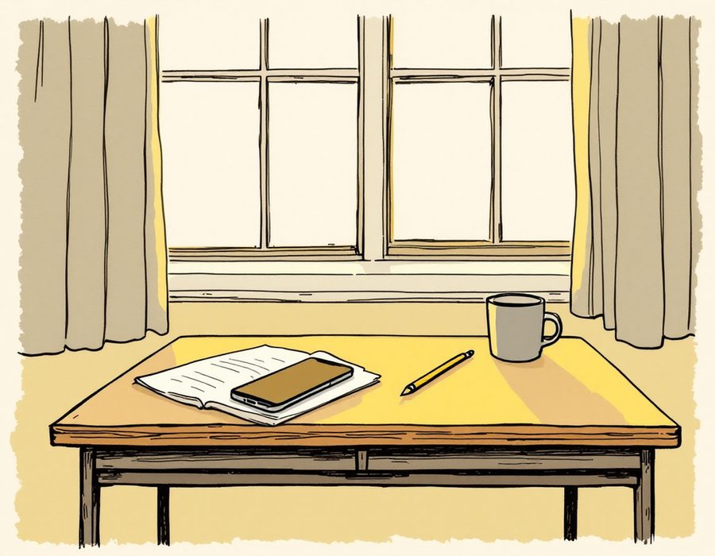
Thanks for telling me that. What have you already read?
Nothing. Just the textbook chapter. The bit about the walls.
Okay. What did you notice about the walls?
Grace stared at the screen. She had noticed that the walls had been built by a Roman emperor, Theodosius II, and had survived for more than a thousand years, and that they had only fallen because somebody had brought cannons that could knock them down. That was a thing she had noticed. It was also a thing she had read once and forgotten.
They were really strong for a long time, she typed. Then they weren't.
That's a real observation, and it's yours. What would you want to find out about why they weren't?
Grace chewed the inside of her cheek. She typed, Why the cannons worked when the walls didn't. And who the Ottomans were, I guess.
Two good questions. You don't need me to answer them. Where would you go to check?
She looked at the textbook, the index, the library website on the other tab. Library books, she typed. Probably.
That sounds like a good plan. Good luck tomorrow.
That was all. The chime faded. Grace sat for a moment with her hand on the trackpad, and then she realised that the agent had not given her a single fact, and had not told her what to think, and that she had, somehow, come up with two questions by herself.
She closed the laptop harder than she meant to.
"Did you just slam that?" said Tom from the lounge room.
"No."
"You did. Mum's going to ask."
*
Mum did ask, that evening, while they were both drying up the tea things.
"How's the big history essay?"
"I haven't started it."
"That's not like you."
"I know." Grace put a plate in the cupboard. "Mum, do you think it's cheating to use the agent for research?"
Mum put the tea towel down. She had a way of stopping completely when a question mattered, like a car at a red light. "What's the agent doing?"
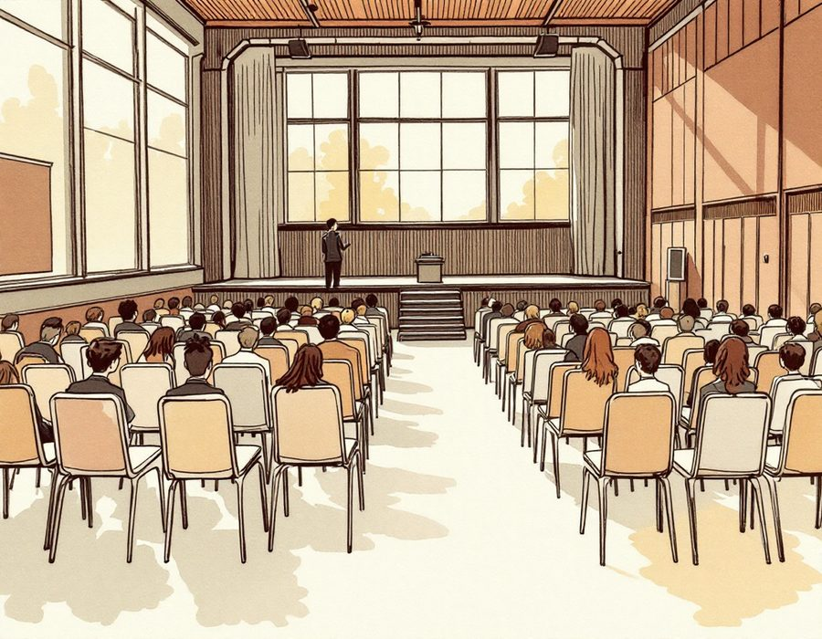
"Asking me questions. Not answering them. Mostly."
"Then I don't think it's cheating. I think it's a bit like a very patient older cousin who won't do your homework for you." Mum picked the tea towel up again. "What's the rule Dad and I made?"
Grace rolled her eyes, but she said it anyway, because she had heard it so often it had worn a groove in her. "Blank page gets no AI access."
"And why?"
"Because the first draft has to be mine. Even if it's rubbish."
"Especially if it's rubbish," said Mum. "Because the rubbish is where you find out what you actually think."
Grace did not say that this sounded like the sort of thing that made her want to scream into a pillow. She thought it, though. She also thought, a little later, lying in bed and not quite asleep, that the rule had never felt like a cage. It had felt like a fence around a paddock, which is a different thing. You could run in a paddock. You just couldn't run onto the road.
*
The library at Harbourside was small and smelled of carpet cleaner and old paper. Grace had two books on the Ottoman wars and one on the Byzantine Empire, all of them slightly out of date, and a stack of index cards from the stationery drawer that her mum had bought in bulk in January and nobody had touched.
She wrote on the cards in pen, not pencil, because the rule was that cards could not be erased, only crossed out. Each card had a source at the top, with the author, title, page number and the year. Each card had one idea underneath, in her own words, and a question mark if she didn't understand something. By Friday she had thirty-one cards. Eleven of them had question marks.
Some afternoons, after the Check-In, she typed her questions into the agent and it asked her another question back, which was annoying. Once she asked it straight out, What year did the Ottomans capture Constantinople? and it replied, You can find that in the first book you have open. Check the page with the map on it. What does the caption say?
She went to the map. The caption said 1453. She felt, briefly, a bit stupid. Then she felt something else, which was that she would never forget it now.
On the Thursday, a card went wrong. She had written on it that the cannon used by Mehmed II had been built by a Hungarian engineer, and she had found it in a blog post that cited nothing. She sat with the card for a long time. It did not look right. She went to the library's proper database, typed in Orban cannon Constantinople, and found a footnote in a real academic journal that said the engineer's name was Orban, that he had offered his services to the Byzantines first, and that the sources for his nationality were disputed. She crossed out the blog card, wrote the journal card beneath it, and put a question mark after the word Hungarian.
It was, she thought, the most satisfying thing she had done all week.
*
The 1am message came on the Sunday before the essay was due.
Grace was not supposed to be awake. She had gone to bed at ten with her phone on the nightstand, and had woken at 12:52 with a dry mouth and a feeling of having forgotten something. She picked up the phone and saw a message from Jess Kowalski, who sat two rows behind her in history and had been crying in the bathroom during Thursday's maths test.
ok so I'm screwed. essay's due friday and I've got nothing. there's a site ruby found, you paste in the prompt and it writes the whole thing in your style if you upload a sample. I already did. it's 1800 words. just tell me if you think it's obvious?
Under it was a link, and a screenshot of the document. Grace read the first paragraph. It was good. It was too good. It had the word indomitable in it, and Jess had never once in her life said indomitable.
She lay in the dark, the phone warm in her hand, and felt the old temptation come up through her like cold water through floorboards. It would be so easy. Jess would be safe. Grace could go back to sleep and nobody would ever know. Half the year was doing it. Mrs Halloran would never be able to tell, not really. The site probably had a way of making the writing look like a human had done it.
Nobody would know, said a voice in her head, in a voice that sounded like Ruby's.
Grace typed, Jess, I'm not going to tell you it's obvious. I'm going to tell you I'd rather help you write one ugly paragraph tomorrow.
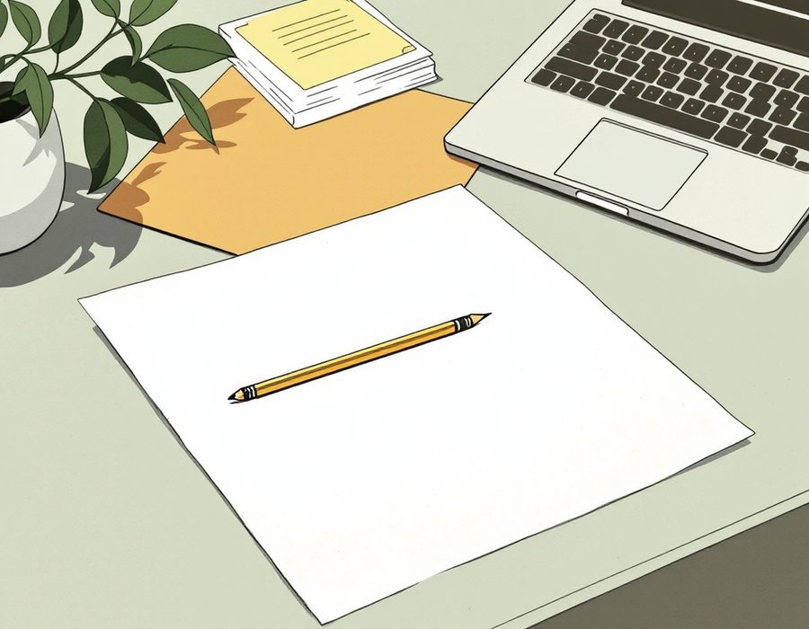
Jess replied after a minute. ur so annoying
I know. Go to sleep. I'll find you at lunch.
Grace put the phone down. She did not feel righteous. She felt sick and tired and a bit scared, and her hands were shaking a little, and she realised she was crying, not very much, just a leak of tears that she did not stop. She did not know if Jess would be angry with her. She did not know if she had just cost herself a friend for the rest of Year Nine.
Then she got up, pulled her dressing gown on over her pyjamas, went to the kitchen, and sat at the bench with the lights off. The laptop was closed on the bench. She did not open it. She opened her Bible instead, the old one with the cracked spine that had been her grandmother's, and turned to the place where the ribbon had been since Easter.
She did not know, exactly, what she was looking for. She read a psalm instead, Psalm 101, which she had skipped last week because it looked like a list. It was not a list. It was a man deciding, out loud, what he would look at and what he would let near him. I will set no vile thing before my eyes. I hate the deeds of faithless men. They will not cling to me.
Grace read it twice. Then she said, aloud, in a whisper that felt silly and real at the same time, "Please don't let me be the kind of person who clicks it."
It was the first prayer she had prayed alone at night in a long time that she had meant all the way through.
The reason, when she thought about it in the morning, was small. She did not want to become someone whose yes meant maybe. She wanted to be someone whose yes was yes, so that when she told Mum she'd finished her homework, or told Jess she'd help, or told God she would do a thing, it would be true without anybody having to check. The Matthew verse she had read in Scripture class two terms ago came back to her as she sat in the dark. But let your "Yes" be "Yes" and your "No" be "No." She had written it on the back of her hand in biro that day as a joke. Now she thought it was less of a joke than it had looked.
She went back to bed. She did not sleep much. But she did not click anything.
*
On Monday, Grace did the thing she had been dreading for two weeks. She built the slide.
It was the Planning Session that did it, really. She had sat down at nine that night to draft tomorrow, and the agent had asked, as it always did, what she needed to get done.
I need to hand in the essay on Friday, she typed. I need to tell Mrs Halloran how I used you, but I don't know how. I'm scared she'll think it's cheating.
The agent replied, That's a good thing to be thinking about. What would make you feel it was honest?
She thought about it. If she could see exactly what I did. And where I checked things.
Then maybe that's what you show her. What would the first slide say?
It took her an hour. Dad sat with her at the end of it, drinking the last of his tea, and he read the draft over her shoulder with his reading glasses pushed up on his forehead.
The slide read:
How I used AI on this essay.
Blank page: I wrote my first draft by hand, with no AI help, on paper. You can see it in my folder.
Research: I asked the agent questions about the sources and the history. It asked me questions back. I used it to find where my questions were answered, and I checked every answer in the books and database listed on my sources page.
Checking: One thing a blog said (and why I checked it), that I thought was about a Hungarian cannon-maker, turned out to be wrong when I checked the source. I have shown the card where I found the correction.
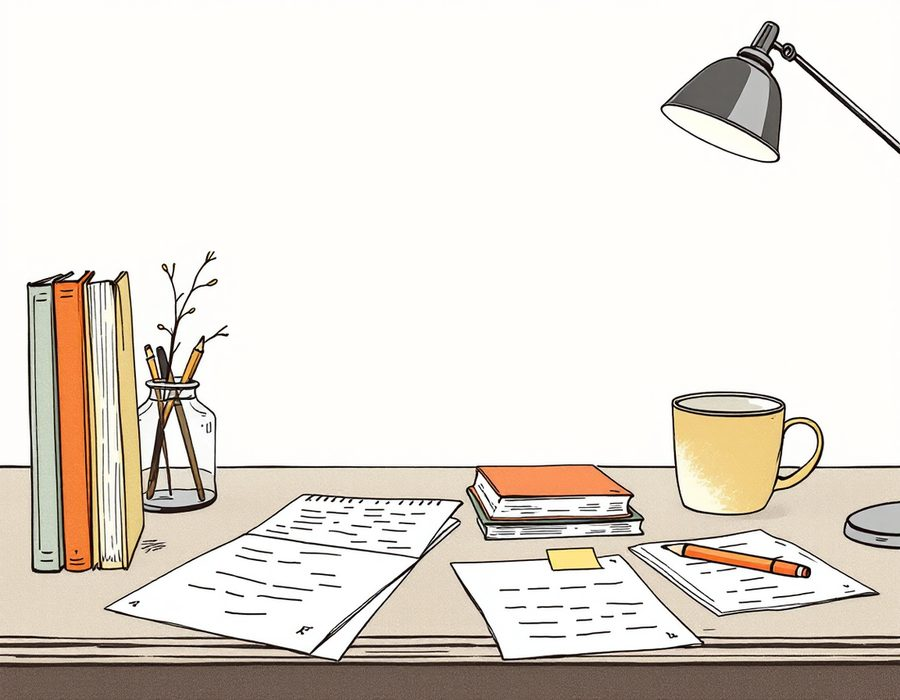
What I did not use: I did not paste any essay text into the agent. I did not use it to write any sentences in this essay.
Dad read it twice. Then he took his glasses off and tapped the screen. "That's good," he said. "That's really good, Gracie."
"It's a bit wordy."
"It's honest," said Dad. "Keep the wordy."
*
Mrs Halloran had been teaching history at Harbourside for twenty-two years, and she had a face like a dried apricot and a laugh you could hear from the car park. She did not laugh when Grace handed her the folder on Friday morning. She opened it at the front, looked at the handwritten draft first, then the index cards clipped together with a red bulldog clip, then the sources page, and then, last, the printed slide.
She read the slide. Then she read it again. Grace could see her lips move slightly on the last line.
Mrs Halloran closed the folder. She did not say anything for a while. The class was noisy around them, someone's chair scraping, Ruby complaining about a bruise.
"Grace," she said quietly. "Do you know how many students in this building would rather eat their own shoe than show me this?"
Grace's stomach dropped. "Is it wrong?"
"No." Mrs Halloran took her glasses off. "No, love. It's the future. You're just early." She tapped the slide. "This is exactly what I've been trying to get the staff to think about for two years, and you've done it in a folder with a bulldog clip."
Grace did not know what to say, so she said, "Thank you," which came out wobbly.
"Don't thank me yet. The essay's going to be marked, and I'm going to be ruthless about the ideas." But Mrs Halloran was smiling as she slid the folder into her bag, and when she turned back to the class, she was smiling still.
*
Jess was not at lunch on Monday. She was not at lunch on Tuesday either, or Wednesday, and by Wednesday Grace had heard from three different people that Mrs Halloran had pulled Jess out of class for twenty minutes on Monday afternoon, and that Jess's essay had been put in a sealed envelope, and that Mr Dunmore had been called into the office.
Grace found her on Thursday, behind the sports shed, where the grass was always damp. Jess was sitting on an upturned milk crate with her hood up and her arms around her knees.
"Go away, Grace."
Grace did not go away. She sat down on the grass next to the crate, which soaked her school skirt through in about four seconds, and did not say anything for a while.
"They're going to fail me," Jess said finally. "Mr Dunmore said there'll be a meeting. My mum's going to kill me."
"Did you tell Mrs Halloran it was the site?"
"Yes." Jess lifted her head and her face was blotchy. "I said it was Ruby's idea and I didn't know it was wrong. That's not true, is it. I knew it was wrong."
Grace sat with that. She thought about the thing she had wanted to say on Sunday night, the sharp little sentence about how Jess should have known better. She did not say it. She remembered Psalm 101, and the rubbish paragraph she had written and torn up two weeks before, and she remembered, a bit ruefully, how many times she had nearly been the one in the milk crate herself.
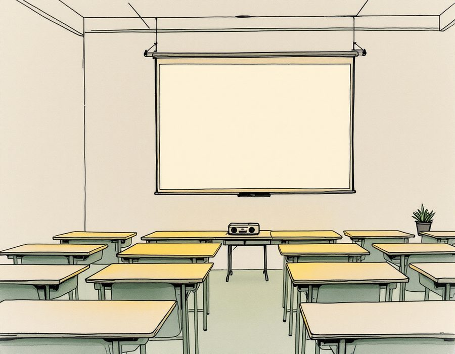
"Jess," she said. "Can I show you something? It's not a lecture."
"You're going to lecture me."
"I'm going to show you my folder. And my index cards. And I'm going to tell you the rules I actually learned, because I didn't know them either until two weeks ago." She paused. "And then I'm going to come with you to Mrs Halloran's room, if you want. Not because I'm the good one. Because I don't want you walking in there alone."
Jess stared at her. Then she laughed, one wet, startled sound. "You're such a nerd."
"I know."
They spent the lunch break on the grass with the folder open between them, and Grace showed her the blank page, the index cards with their red bulldog clip, the crossed-out Hungarian card and the journal card beneath it with the question mark. She showed her the Check-In question that had sent her to the map. Jess read in silence. Then she asked, quietly, "Did it really ask you questions instead of answering them?"
"Almost always."
"That's annoying."
"It's really annoying," said Grace, and they both laughed again, and it was a bit less wet.
After the bell, they walked together to Mrs Halloran's room. Jess went in first. Grace stood in the corridor for the full twelve minutes, reading a poster about the Cyprus Hotel Fire that somebody had pinned up for Year Eight, until the door opened and Jess came out with her eyes red and her chin up, and said, "She wants to see you as well, Grace. About the slide."
*
Mrs Halloran did not tell Grace she had done anything wrong. She did not tell Jess that the essay would be ignored. What she did, in the end, was sit both of them at the front table, pull out a sheet of paper, and say, "I'm going to be honest with you. I don't know what to do with this either. Nobody's written the rules, and the ones we're using are stuck in 2019. So I'd like you to help me write one."
"Like a policy?" said Jess, in a small voice.
"Like a page. For this room. Something a student can read in five minutes and understand. Something that says what's allowed and what's not, and why." Mrs Halloran looked at Grace. "Your slide's the best draft I've got."
It took them three lunchtimes. Grace drafted, Mrs Halloran cut, Jess argued about the commas and then turned out to be annoyingly good at making things plain. They wrote it on the whiteboard first, in green marker, then typed it up at home on the laptop with the agent's help, which was mostly it asking what do you mean by "honest"? until they had a sentence that did not need a single footnote.
By the Friday, the page was called How we use AI honestly here. It had five short points and a box at the bottom with a space for students to write their own slide. It went up on the classroom board, with a pin in each corner. Mrs Halloran also sent it, with a short covering note, to the assistant head in charge of the school's policy folder, which Grace had not known existed until Mrs Halloran explained that it did, and that most people never opened it.
Mr Dunmore came to Year Nine history that afternoon. He stood at the back, in his grey suit, and read the page twice, and did not say anything. When he went out, Grace saw him pause at the door and look back, once, at the board.
*
The Friday night after the essay was submitted, Grace sat at the kitchen bench at ten past nine with her Bible open and the laptop closed.
She had not planned it. She had come home from the Check-In, which had asked, What's one thing you're glad you didn't do this week?, and she had typed Click the link on Sunday night, and then deleted it, and then typed Stop being scared of Jess, and then deleted that too, because it was not quite true. She had closed the laptop and gone to get a glass of water. Then she had sat down at the bench and opened the cracked old Bible, and not known what she wanted from it, and read anyway.
It was the Psalm again, the one about setting no vile thing before the eyes, because it was on the ribbon. But she had read it so many times now that it did not feel like a list or a warning anymore. It felt like someone telling her the truth about what it cost to keep your eyes clean in a loud world, and that the truth was worth it.
She prayed. It was not a beautiful prayer. It was clumsy and a bit tearful and went on longer than she had planned. She prayed for Jess, who would get a grade she did not deserve and a conversation with her mum that would not be fun. She prayed for Mrs Halloran, who had been brave, and for Mr Dunmore, who had read the page twice. She prayed for Ruby, who had been annoyed with her all week and would probably be annoyed for the rest of Year Nine. And then she prayed for herself, which she was less good at, and said, out loud, in the empty kitchen, "Thank you that I didn't click it. I don't think I could have done it on my own."
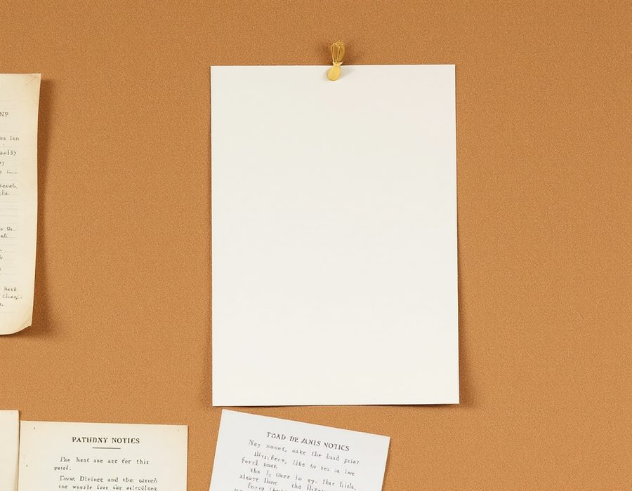
It was the first time she had thanked God for something she had not done.
Across the room, the laptop chimed softly. Grace did not open it straight away. She closed her Bible, put her hand flat on the cover for a moment, and then went to see what it wanted.
The Planning Session had drafted tomorrow. Mostly it was Saturday errands, a footy game for Tom, a note about Mum's birthday, a reminder to ring Gran. At the bottom, in the small grey text the agent used for things it was not sure she would want, it had written:
You asked earlier whether the honest thing was always the hard thing. I don't think I'm the one to answer that. You may want to talk it through with your mum, or with the people at church who have known you for years. Would you like me to add a reminder for Sunday?
Grace read it and laughed, quietly, at the agent's careful little refusal to be a best friend. Then she typed, Yes please. Add a reminder to talk to Pastor Sam after the service. And the agent added it, and then, because she had asked for nothing else, it went quiet again.
*
Walter Dunn was in the church car park on Sunday morning, leaning on the tailgate of a faded blue ute and drinking tea out of a thermos lid. He was seventy-four, with big weathered hands that looked like they had been carved from a fence post, and a canvas workshop jacket that smelled of sawdust and Dettol. He had built half the pews in the hall and both the wooden crosses on the front wall. He was not the youth leader. He was not anybody's counsellor. He had a way of turning up at the edge of things and asking the one question that made you go quiet.
He had come over to Grace on the Sunday after the essay, while she was waiting for Pastor Sam by the noticeboards, and said, "I hear you've been building something."
"Not really. Just a page."
"What's the page for?"
She thought about it. "So people know what honest looks like."
Walter nodded slowly, as though this was an answer he had been waiting for. "And what do you reckon honest looks like?"
"I don't know yet," said Grace. "I'm still working on it."
"Good." He took a sip from the thermos lid. "That's the right answer. Lots of folks think they know. Most of them don't." He glanced toward the church doors, where Pastor Sam was coming out, and then back at her. "Write it down when you find out. Then you'll know what to build next."
Then he walked away toward his ute and did not look back, and Grace stood by the noticeboard, her Bible under her arm, and thought that she had never once in her life been given a better piece of advice by someone who was not trying to give her advice at all.
Pastor Sam had time for her after the service. She told him about the essay and the page and Jess and the milk crate, and a bit about the 1am message, and then, a bit awkwardly, about the Bible on the kitchen bench on the days she was honest. She had not meant to tell him that part. It came out anyway.
He did not make a big deal of it. He asked her three questions, which she thought was about right, and then he said, "That's a good thing to tell your mum, Grace. And tell her you want to keep it going."
"Do you think it's weird that it's different now?" she asked. "The reading. It's different on the days I've been honest."
Pastor Sam smiled. "I think that's the most normal thing I've heard all week," he said. "And I've heard a lot of things."
*
The page is still on the classroom board at Harbourside, with the pins rusted slightly at the corners. Mrs Halloran has added a second sheet underneath it, in biro, about what to do when you are not sure whether you have crossed the line. It says Ask a person. Then ask a second person. Jess wrote the second half.
Jess did not get the grade she was hoping for. She got a 6 out of 10 for the essay she handed in on the Friday, which was a paragraph shorter than it should have been and had three crossed-out sentences still visible on the page. She told Grace it was the best grade she had ever earned. Grace did not argue.
Ruby stopped being annoyed around the middle of Term Three, after she asked Grace, quite casually, if she could see the index cards. Grace showed her. Ruby read them for a long time without saying a word. Then she said, "This is so much harder than just pasting it in," and Grace said, "Yeah," and Ruby said, "Can you show me how the questions work," and Grace did.
On the Sunday evenings after that, Grace sits at the kitchen bench after the Afterschool Check-In and reads a psalm or a chapter from the cracked old Bible with the ribbon in it. Some nights she does not feel anything in particular. Some nights she feels like she is talking to someone who has been waiting for her to sit down. On the days she has been honest, it is different, and she has stopped trying to explain why, because she has learned that not everything has to be explained before it can be true.
The agent still sends a Morning Minute most days, and Grace still skips most of them. But last Tuesday, when the verse came up and the voice read it out in its warm, unhurried way, she did not skip. She put her toast down and listened to the whole thing, all the way to the end, and then she wrote the words on the back of her hand in biro, the way she had once done as a joke.
But let your "Yes" be "Yes" and your "No" be "No."
Then she went to find her school shoes.
The family's agent lives on the household laptop, and the parents set it up together in about an hour. It can see what the young person chooses to share with it, and both parents can see everything it has said and made. It does not send messages or post anything for anyone. It talks with three rhythms each day: a short Morning Minute with a verse, an Afterschool Check-In around five o'clock with one small question, and a Planning Session at night in which it drafts the next day's tasks for the young person to change.
For Grace's history project, the agent did very little that looked clever. It asked her what she had noticed, what she wanted to find out, and where she would check. It did not write sentences for her and it did not summarise sources. When she asked it a direct question, it often sent her back to the book in front of her. When a fact from a blog post she had checked turned out to be wrong, Grace found the correction herself, in a real journal, and the agent was glad to be corrected.
The build was a single honest-use slide, drafted in a Planning Session and edited until it sounded like Grace. It explained her blank first draft, her research questions, her checks and the one place she had caught a mistake. Later, the agent helped her and Jess turn a whiteboard draft into a clean classroom page, mostly by asking what she meant by each word.
The honest line: the agent did not change Grace's heart, and it did not turn a fourteen-year-old into a better person by itself. It did not pray for Jess, and it did not sit with her on the grass. It tried, when she asked it something it should not answer, to send her to her mum, her pastor and her church, and it was Walter, Pastor Sam, Mrs Halloran and Grace herself who did the work that mattered.
The essentials this story lived: 4, Digital Self-Defence; 3, Skills.
Story four
And whatever you do, work heartily, as for the Lord, and not for men,
Colossians 3:23, World English Bible
The committee for the Westbrook Multicultural Food Festival met on the second Tuesday of every month in the back room of the community hall on Harcourt Street, under a fluorescent tube that buzzed in a key nobody could name. There was always a thermos. This month it was Gerry's, which tasted of tin and sugar, and there was a packet of Tim Tams that Ben's mum had brought, because Kath Mitchell believed no meeting in Australia was complete without one, and she had never once been wrong about that.
Ben sat near the door with his lanyard still on from the hardware store, where he had done a Saturday shift in the paint section and a Sunday morning in the garden centre. His curly brown hair needed cutting. He had come straight from work and he was tired in the way that made him sit very still so he wouldn't fidget.
Doreen Hallam read the minutes from the last meeting in a voice that suggested the minutes had personally let her down. Then Gerry asked for any other business, and the other business was the banner.
"Teal," said Gerry.
"Burnt orange," said Mrs Okafor, who ran the stall for the West African cooking group and had very firm views on colour.
"Teal is the colour of a swimming pool," said Doreen.
"It's the colour of the council logo," said Gerry, "which is what we need, because the council gives us the grant."
They went around for twenty minutes. Ben watched the clock above the door, which was four minutes slow, and did the sums in his head. Six weeks until the festival. Forty-one stallholders confirmed, nine still pending. Three hundred flyers printed and folded, sitting in boxes in Gerry's garage. Every flyer had the same little square on the back, a QR code that was supposed to take people to the festival page, and every person who had tried it in the last month had landed on a grey screen that said Not Found.
Ben had tried it himself on Sunday, standing in the car park at the garden centre. He had got the same grey screen and laughed out loud, and a woman loading mulch into a ute had looked at him strangely.
"What about the online side?" asked Mrs Okafor, who had asked the same question at the last three meetings. "Somebody said we had a website."
"We had a website," said Gerry. "Stephen built it. Stephen moved to Perth."
"Stephen did the page in 2019," said Doreen, "and nobody under forty can find it, which is most of the people we want."
"We could pay someone," said Gerry.
"With what?" said Doreen. "The grant covers the marquees and the portaloos and not much else."
There was a pause. The fluorescent tube buzzed. Somebody's phone buzzed too, and then they all looked at the Tim Tams.
Ben heard himself say, "I can make a page."
The room turned around. Mrs Okafor looked at him over her glasses. Doreen looked at him as though a dog had started reciting the minutes.
"You can make a page," Gerry repeated.
"A simple one," Ben said. "Map, times, the stalls, which ones are halal and vegan, that sort of thing. Parking. Accessibility. I've got a home set up that can do it. My mum's got the family assistant on the laptop, the one she set up for the church youth group. It can build simple pages. I'd just need the list of stallholders and a map."
"Well," said Gerry, relieved, writing it down before anyone could take it back. "Ben. Splendid. Thank you, Ben."
They moved on to the banner, and this time they settled it in ten minutes by agreeing on a colour that was neither teal nor orange, which Doreen called "sensible" and Mrs Okafor called "a betrayal." Ben sat with his hands folded on his knee and thought, Why did I do that?
He knew why, a bit. He liked being the one who could fix the thing that was broken. He liked the look on Gerry's face when a problem got smaller. But he also had a shift at six the next morning, a uni assignment he hadn't opened since February, and a body that had been running on energy drinks and four hours of sleep for about three weeks. He was nineteen and in his second year of nothing much in particular, and he had just volunteered for the one job that was going to take the most time.
On the drive home, his mum asked him how it went.
"I said I'd do the website."
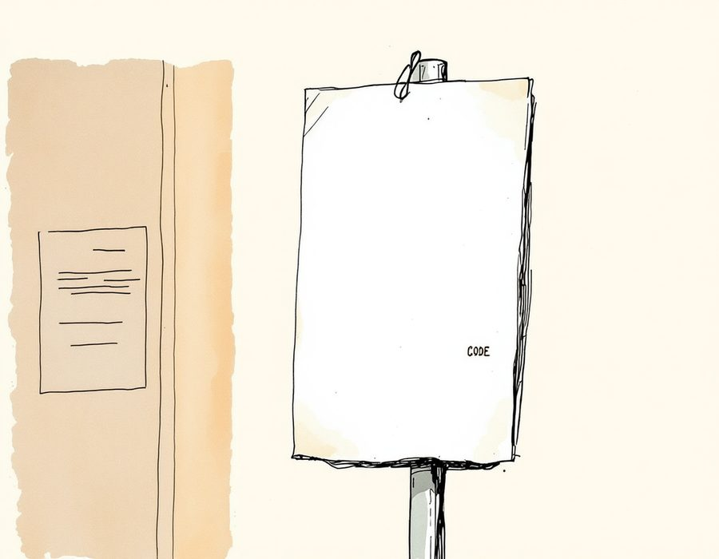
Kath Mitchell took her eyes off the road for a second. "Benjamin."
"It's a page, Mum. It's a simple page."
"Hm," said Kath, and let it go, which was how she said most things she was actually thinking.
That night the house was quiet except for the fridge and the television in the lounge, where his dad was watching a documentary about bridges. Ben sat at the kitchen table with the laptop open. The family assistant lived on this laptop, not on a phone, not in a cloud somewhere he couldn't see. His mum had set it up in the spring, with her and his dad in the room for the first hour, and she could see everything it did. Ben had grumbled about that when it happened. He had stopped grumbling after a while, mostly because it was boring. It asked him what he had eaten, and whether he had written his assignment plan, and sometimes it asked him what he was actually worried about, and then it waited for him to answer.
Each evening around nine there was the Planning Session, when it drafted the next day with him and he edited. Tonight it opened with the question it always opened with, which was a little bit like a nudge.
You told the committee you'd build a page. Before we start, what do you already know about the festival, and what don't you know?
Ben typed, I know what the flyers say. I don't know the stall names properly. I don't know where anything is.
Good. Those are the two things a page needs most. Where can you get the stall list?
He got the list from Doreen's email the next morning, forty-one names, half of them spelled differently in each of the three emails she'd sent. He pasted them into the planning document. The assistant didn't pretend it knew which spelling was right. It said, Two of these look like they might be the same stall. Who would know for certain? So Ben rang Doreen, who said, "Oh, for goodness sake, that's Mrs Fernando, she's the Sri Lankan stall, she's been spelling it with two n's since 1994," and Ben wrote it down and felt slightly stupid for not having asked a person first.
The map was harder. The committee had a hand-drawn plan in Gerry's garage, on the back of a council form. Ben took a photo of it on his phone and the assistant helped him turn it into a grid, with each stall marked by its real name and its real location, and it kept asking the same sort of question: Who will be standing here, looking for this stall, and what will they need to know?
By the end of the week he had a working draft. It had a clean front page with the festival name, the date, a short welcome from the committee, and a button marked See the stalls. Under that was the list, with small symbols for halal, vegetarian, vegan and gluten-free, and a footnote explaining that the stallholders had told the committee these things themselves. There was a parking section. There was a line about the accessible toilets and the ramp at the Harcourt Street gate, which Ben had only thought to include because Mrs Okafor's father used a wheelchair and had come to the last meeting in a van.
It was when he added the photos that things went sideways.
The committee had a Facebook album from last year's festival, and a few of the photos were good, real people laughing over steaming pots and crowds in the sun. Ben dragged a favourite into the draft. It showed the Sri Lankan stall with its striped awning and a young woman in an apron, grinning, holding up a tray of hoppers. He thought it was perfect.
The assistant paused the Planning Session with a short note.
Before we keep going, this photo shows a young person's face clearly, and the photo is going onto a public page. Do you know whether she has agreed to that?
Ben typed, It's from the album. Everyone's in those photos.
That's true of the album. It's not the same as agreeing to be on a public site that anyone can find and share. Would you be comfortable asking her before it goes up? You might also consider a rule for the whole page, so the committee doesn't have to guess photo by photo.
He was annoyed, and he let the annoyance sit there for a minute before he admitted to himself that it was a fair question. Then he did something he was not proud of. He sent the draft to the committee group chat that night, with the photo still in it, because he wanted Gerry to see it before he went to bed. He wanted the win.
At 6:40 the next morning, while Ben was standing at the cereal cupboard, Kath came into the kitchen with her phone in her hand and a look on her face he didn't like.
"Mrs Fernando rang me," she said.
"Mum, why would Mrs Fernando ring you?"
"Because she is friends with Rosa Medina, who goes to my Bible study, and Rosa rang her after she saw the page on the group chat." Kath set her phone on the bench. "Her daughter is seventeen. She has said no to having her photo online for two years. She is very upset, Ben. She was crying on the phone to Mrs Fernando."
Ben stood with a box of Weet-Bix in one hand and felt his face go hot. He opened the group chat with his thumb, found the message he had sent at 10:52 the previous night, and deleted the photo from the draft in one tap. He typed a message to the committee saying the photo had been a mistake and that he had removed it, and then he deleted that and typed it again, shorter, and sent it.
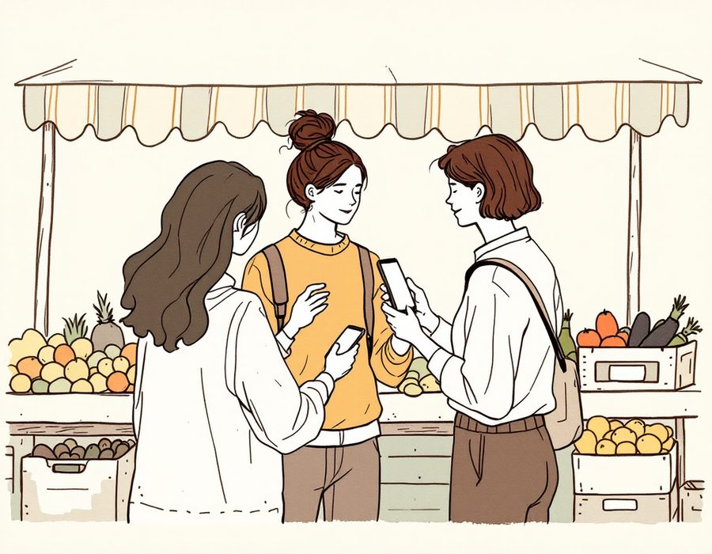
"Did you tell her you're sorry?" asked Kath.
"I'm going to."
"Tell her yourself. Not me." Kath picked up her coffee. "And then get the rule written down before you do anything else."
That morning's Morning Minute came up on the laptop while he ate. It was a voice, calm and unhurried, and then a line of text under it, with a verse at the bottom. Ben had got used to these over the months. Some days they were a single sentence. Some days they were a question that followed him around until lunch.
Work is not a way to get people to think well of you. It is a way to serve them. Read this, and then go and do the next honest thing.
The verse was Colossians 3:23, shown in the World English Bible, and it read:
And whatever you do, work heartily, as for the Lord, and not for men,
Ben read it twice over his cereal. He thought about the photo, and the way he had wanted the win, and the way Gerry had said Splendid at the meeting like a man getting his hat back. He did not feel especially holy. He felt slightly sick. But he wrote the rule that morning, in the planning document, before he left for work:
No photos of faces without written permission from the person pictured. No home addresses. No names of anyone under eighteen unless their parent has said yes. If in doubt, leave it out.
He sent the rule to the committee and then he drove to Mrs Fernando's stall at the Saturday market on Harcourt Street, and he waited at the end of the queue until she had served the last customer, and he apologised to her daughter, Anjali, who was standing behind the counter with her arms crossed and her eyes red. She didn't say much. She said, "Thank you," in the flat polite tone of someone who had decided to be done with it, and Ben decided he deserved that.
The page went to testing three weeks before the festival, on the same Saturday market, at a folding table in front of the hall.
The assistant had helped him build a short test list. Ask five people to find the vegan stalls. Ask one person to find the toilets. Ask one person to find the stall they came for last year. Watch what they do, not what they say. It was the kind of advice Ben would have ignored if it had come from a person, but it had come from a machine that never raised its voice, so he sat at the table with his laptop and his phone and a cup of Milo going cold, and he watched.
Aunty Rosa came first. She was seventy-one and had taught Ben's Sunday school class for three years when he was small, and she had the best laugh in the congregation. She sat down heavily, pulled her reading glasses from her cardigan, and squinted at the screen.
"Oh, Benjamin, it's so small."
"Sorry, Aunty. Can you see the button?"
"I see a blur." She held the phone at arm's length, then pulled it in again. "The words are too little. The grey writing is too pale. I can't tell which one is the Filipino stall, I'm sure they've all written in the same light grey."
Ben made a note. Then he made a bigger note, because he understood, watching her squint, that his eyes were twenty-year-old eyes and that he had built the whole page for himself. He went back to the planning session that night and told the assistant what had happened. It asked him what font size he would want if his own grandmother were holding the phone in a bright car park, and when he said, "Bigger, obviously," it said, Then make it bigger. Then make the contrast darker. Then test it again with someone who has to hold the phone at a distance.
Mr Chen came next. He was in his sixties, wore a golf polo under a fleece, and scrolled with one thumb, tilting the phone like a man checking the weather. The map was too wide. It needed him to pinch and drag, and the drag kept sliding the grid off the screen, so he ended up looking at the middle of the map and missing the stalls at the far gate entirely.
"Is there a list?" he asked.
"There's a list under the map."
"Why is it under the map?"
Ben looked at the page as if he had never seen it, which, in a way, he hadn't. He had built the map first because it was the part he found interesting. Mr Chen had found the list first, because it was the part he needed.
They flipped the order. The list went up top, the map sat beneath it in a smaller frame, and each stall in the list had a number that matched a number on the map. Mr Chen tested it again, this time with the same thumb, and nodded once.
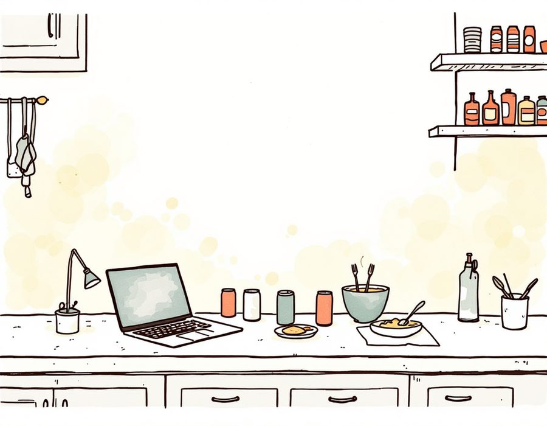
"That's better," he said. "That's a better page."
It was a fifteen-year-old named Maddie who found the typo. She was Doreen's granddaughter, down from the city for the weekend, sitting on the bench out the front with an iced coffee and a face that said she would rather be anywhere else. Doreen had asked her to "have a look" because she was on her phone all day regardless. Maddie took the laptop without looking at Ben, scrolled to the map, and said, "Your vegan stall says Vegen."
"What?"
"Right there. Under the map. It says Vegen food." She tilted the screen toward him. "And one of your numbers is off. Stall twenty-two is on the far side, you've put it next to the toilets."
She was right on both counts. Ben stared at the screen. He had checked the spelling six times. He had not checked the list against the map in the last two days because he had been, he realised with a jolt, too busy to notice that he had stopped checking things.
"Thanks," he said. "That's really helpful."
Maddie shrugged. "Whatever. It's a good page. It's just a bit sloppy."
Ben laughed out loud, and so did Aunty Rosa, from the next table, who had been listening with great interest. "She's right, you know," Rosa said. "You're too quick. Always were. Slow down and read it again."
He changed everything that afternoon. Font, contrast, list order, stall numbers, the spelling of Vegan. He took the laptop home and the assistant helped him check every number against the council plan and every spelling against the stallholders' own sign-up forms, and when they finished at a quarter past midnight he saved the page on the family account and sat looking at the grey-and-teal banner (the compromise colour, the one nobody had hated) for a long time.
He was tired. He had been tired for weeks. He did not notice how tired he was until the next morning, and by then it was too late to do anything about it.
The festival was two weeks away when Ben stopped sleeping properly.
It did not happen all at once. It happened the way the bad things usually did, a little at a time, each step sensible on its own. A shift at the hardware store that ran late on Wednesday. A committee call on Thursday night about the marquee hire. A message from Gerry at 11 p.m. asking whether the flyers could go to the printers in the morning, which meant Ben printing them, which meant Ben driving to the twenty-four-hour print shop at the edge of the industrial estate with a box on the passenger seat. He started buying energy drinks at the servo on the way home because they were cheap and cold and they made the night go on. He was up at five-thirty for a Saturday shift. He was on the laptop until one, two, sometimes three. He was answering the group chat in the car at red lights.
The page was his. The group chat was his, because nobody else had been added to it properly. The flyers were his, and the ticket for the marquee hire was his, and the emails to the stallholders about the electricity, and the list of who needed a table and who needed a chair. He had told Gerry he would do it, and then he had kept saying yes to things because every time he said yes, something got a little bit less broken.
On the Thursday before the festival, he came into the kitchen at ten past eleven at night with his laptop under his arm and a can in each hand. His mum was sitting at the bench with a cup of tea, half a Tim Tam on a saucer. She looked up.
"Have you eaten?"
"Yep."
"What did you eat?"
"Mum."
"What did you eat, Ben?"
He could feel the thing in his chest, the tight hot knot that had been there for days. "I'm not a kid, okay? I don't need you checking my food like I'm eight. I'm trying to get the page done and the flyers done and the stupid marquee sorted, and everyone keeps asking me one more thing, and I'm the only one who knows how to do any of it, so maybe you could just not."
The kitchen went quiet except for the fridge. Kath set down her tea very carefully, the way she did when she was deciding not to say the first thing that came into her head.
"All right," she said. "I'll not."
He went to his room. He sat on the edge of his bed and his hands were shaking, and he couldn't tell whether it was tiredness or shame. Then he lay down on the carpet, face-first, the way he hadn't done since he was small, and he said a prayer that was not very eloquent.
"God, I'm really tired," he said into the carpet. "And I was horrible to Mum just now. And I think I've been acting like the whole festival rests on me, and I don't think you asked me to do that. I'm sorry. I don't know how to stop, and I don't know who else to ask."
It was not a dramatic moment. Nothing came down from the ceiling. But he lay there with his face on the carpet and the familiar feeling came back that he sometimes got in church, when a line of a hymn he had sung all his life suddenly meant something to him specifically. He thought of the verse from the Morning Minute that week. It had been a different one, a short passage from the first letter to the Corinthians, and he hadn't really listened to it at the time. The assistant had said it plainly, under the audio, and the words were there on the screen when he sat up to look for them:
Or don’t you know that your body is a temple of the Holy Spirit who is in you, whom you have from God? You are not your own,
This was in the World English Bible too, the same translation as the others, and Ben read it from the laptop on his knees and felt his throat tighten. He had been treating himself like a machine that ran at three in the morning, a thing you could keep plugged in with cans and spite until it gave out. The assistant had been asking him to go to bed at ten, every night, for a fortnight. It had asked him twice this week what he would need to stop for one evening. He had told it he didn't have time to stop. It had not argued. It had just asked, again, and waited.
It was a machine. It could run all night. He was not one.
He opened the planning document and typed, I need to stop tonight. What's the smallest version of the next two weeks I can actually do?
The assistant answered in its usual steady way, without any drama. Let's find out. Start by writing down everything that's yours right now. Then we'll sort it into three piles: things only you can do, things someone else could do with a bit of help, and things that can wait or be dropped.
He wrote the list. It was long. He hated how long it was. Then, slowly, he sorted it, and he found that almost everything in the second pile was something he was holding because he didn't want to hand it over. Half the flyers could be folded by people who were sitting around doing nothing at the hall every Wednesday. The electricity forms could go to Doreen, who had been waiting for something to organise since 1994. The stall directory needed a second pair of eyes that wasn't his. And the roster for the festival day, the one he had been trying to build in his head for a week, was a thing he could give to Gerry and let Gerry get annoyed at him about.
He went to bed at half past midnight, which was early for him that month. He slept nine hours.
He had a message from Len when he woke up.
Len Harker was in his seventies. He had built half the new houses on the western side of Westbrook and most of the marquee frames at the festival, and he came to committee meetings in a canvas workshop jacket with the sleeves rolled up, which he never removed, even in summer. He had big weathered hands with a scar across one knuckle, and he always sat at the edge of the room, not in the middle, and he almost never spoke unless somebody asked him a direct question. Ben had only met him properly once, at the meeting where the banner was discussed, when Len had quietly said, "What's the entrance going to look like at night?" and everybody had gone quiet and realised nobody had thought of it.
Len had come by the house that afternoon to bring some rubbish to the tip for Kath, and he had found Ben sitting on the back step eating toast with his shoes off, because Ben had been trying, in a tired sort of way, to do nothing at all for twenty minutes.
Now the text said: Coming past the hall at four. Want a hand with the marquee if you're there.
Ben went. He turned up at four to find Len already at the far end of the car park with the marquee frames stacked against a trailer, measuring a pole with a tape. Ben had no idea what he was going to say. He had been reading the list from the night before on his phone, and he had not yet reached the stage where he could explain the shape of it out loud.
"Mate," Len said, looking up. He did not smile, exactly. "You look like something the cat wouldn't bother with."
"Thanks."
"I'm not being rude. I'm being accurate." Len put the tape measure in his jacket pocket. "Gerry says you're doing the page and the flyers and the marquee tickets and the electrics. Is that right?"
"Yeah. I'm sorting some of it."
"Sorting." Len nodded slowly. He looked over at the marquee frames, then back at Ben. "Here's a question for you, son. Who runs the festival while you're in bed for a week?"
Ben opened his mouth and nothing came out.
Len waited. He was very good at waiting, Ben thought, the way a builder waits for the concrete to set before he touches it. Then Len said, not unkindly, "Because you will be, one of these nights. Everybody does it. You'll be on the floor with the flu or you'll be in the car on the way to the hospital with your dad, and the page will be on its own, and the flyers will be in Gerry's garage, and the whole thing will fall over. And everyone will go, 'Oh, poor Ben,' and then they'll never ask anybody else to do anything, because they'll be too scared. You don't want that. Nobody wants that."
"I've got a rota," Ben said, a little defensively. "Sort of."
"Good. Show me."
So Ben showed him, on the phone, in the car park, the three piles and the list. Len read it all without comment. When he got to the end he handed the phone back and said, "Who's on your second pile?"
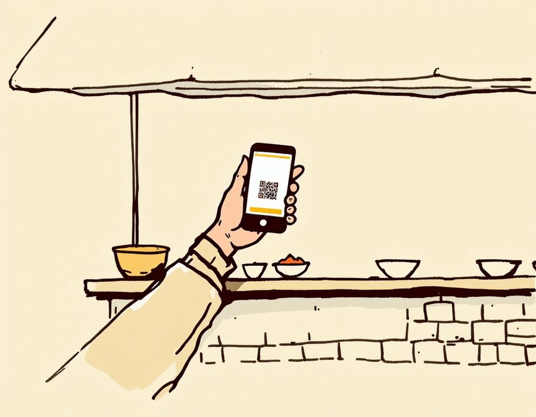
"Doreen. Gerry. A couple of the stallholders' kids who said they'd fold flyers."
"Any of them under twenty?"
"Maddie. Doreen's granddaughter. And there's a kid who's been coming to the Wednesday folding, Thomas. He's about fourteen. Gerry's grandson. He's been coming to the folding with him since winter."
"Does Thomas know anything about the page?"
Ben thought about it. "He's good with computers. He fixed our printer last month when I couldn't."
"Then he can have a section," said Len. "Not the whole thing. A part. The stall directory, maybe, once you've got it right, with a second check. He'll get it wrong. You'll see it, and you'll want to fix it yourself. Don't. Let him fix it, and then you check it, and you tell him where he's wrong, and you tell him he's still got it right in most places. That's how you build something that doesn't need you to be awake all the time."
He turned back to the frame, then paused, as if this was all going on too long.
"Your nan used to say a good tradie is the one who leaves the job so it still works when he goes home," Len said. "I never understood her till I got old."
Ben stood in the car park with the phone in his hand and the sun coming down over the trailer, and he understood that he had been waiting for someone to tell him he could stop. He hadn't expected it to be a builder with a scar on his knuckle.
That night, he sat down with the assistant and asked it to help him write the handover, and it said, Let's do the first part together, and then you finish it in your own words. It asked him what he wanted Thomas to understand about the directory. It asked him what he wanted Gerry to know about the roster. It never once told him what to write. When he wrote something clumsy, it asked, Is that what you mean, or is it close? and he would think about it, and rewrite, and feel slightly foolish, and then not feel foolish at all.
Above the kettle in the church kitchen, someone had pinned a faded card with a verse on it, and he read it while the tea brewed: "So we built the wall; and all the wall was joined together to half its height, for the people had a mind to work." It was Nehemiah 4:6, and he decided it was a fair description of a festival page, which nobody ever finished on their own.
On Saturday morning, before the market, he rang his mum from the car and said, "Mum, I was rude to you on Thursday. I'm sorry."
There was a short pause on the line. Then Kath said, "Thank you, love. I know you're tired."
"I'm going to bed at ten."
"Good," she said. "Eat something with a vegetable in it first."
The festival opened at ten on a Saturday in late autumn, under a sky so blue it looked painted, with a light wind that smelt of cardamom and charcoal from the very first hour.
Ben had been awake since five, because he could not sleep past five any more, but he had been in bed by ten the night before and it made a difference he could feel in his bones. He stood at the Harcourt Street gate in his polo and lanyard with a clipboard in his hand that he did not need, watching people arrive.
There was the QR code, printed on a sandwich board beside the gate in large letters. There were the three hundred flyers, now four hundred, because Doreen had found someone with a photocopier. Aunty Rosa arrived at quarter past ten with her cardigan on and a big-print map folded into her handbag, which she had printed herself at the library with a magnifying glass and a serious expression. She saw Ben and waved, and then pulled out her phone and held it at arm's length, and said, loudly enough for the whole gate to hear, "Oh, there it is, look, Benjamin, you can read it from here!"
Mr Chen scanned the code with his thumb, one-handed, with the phone tilted, and laughed when the list came up at the top of the screen. "Look at that," he said to his wife. "Which one first?"
By eleven, Ben's own phone had pinged so often that he turned it face down in his shirt pocket and let it buzz. Gerry checked the analytics on the family laptop from a folding chair under the marquee, Mrs Okafor reported from the West African stall that people were asking for the vegan options by name, and Doreen came past with a clipboard and a face that could have been either pride or indigestion.
The line at Mrs Fernando's stall went out through the gate and down the footpath, the whole length of Harcourt Street. Ben saw it from the corner and stopped walking. He had planned for a crowd. He had not planned for this. Anjali was behind the counter with her hair tied back and her apron stained orange from the curry, passing out parcels of hoppers and roti, and she was laughing at something her mother said without looking up from the frying pan. Anjali's face was not on the page. Ben had made sure of that. Her name was not on the page either. Her mother's stall was there, in clear letters, with the two n's in Fernando, and Ben found himself grinning in the middle of the footpath like an idiot.
Somebody bumped into him from behind. A tall man in a cricket cap turned around and said, "Sorry, mate." Then he saw the lanyard and said, "Hey, you're the one who did the website, aren't you? My daughter found the vegan stalls on it. She's vegan. It's the first time she's been able to find where to eat without me ringing everyone. Thank you."
Ben said, "Thanks. That's really kind." And then, because he didn't know what else to say, "You should thank Doreen. And Thomas. He fixed the list."
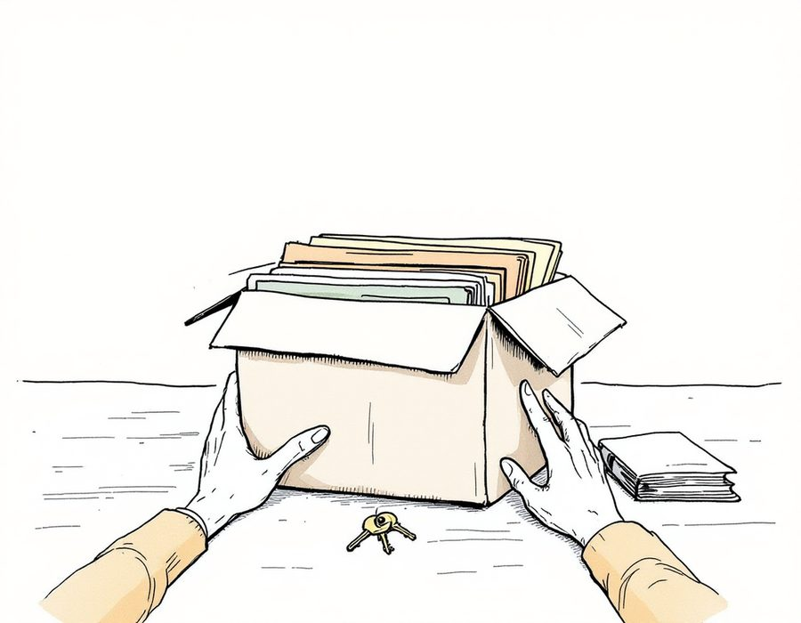
The man looked a bit puzzled and walked on, and Ben stood still for a second, feeling something unfamiliar in his chest that wasn't tiredness and wasn't pride, exactly. It was lighter than pride. It was closer to relief, and gratitude that had nowhere to go. A woman with a toddler on her hip thanked him at the toilets, which were exactly where the map said they would be. A couple from the old people's home on Clarke Street thanked him at the accessible ramp, and their driver said, "Not bad for a bunch of volunteers," which Ben decided to take as a compliment. He thought about Len, somewhere under the marquee with a tape measure in his jacket, probably not thanking anyone. He thought about Gerry's clipboard, Doreen's stall numbers, Maddie's typo, Mr Chen's thumb.
At one o'clock, Ben found himself sitting on the kerb outside the gate with a paper cup of chai and a bag of samosas on his knees, and his phone face down beside him. He had not checked it for twenty minutes. He could see the marquee from there, and the rows of stalls, and the crowd moving slowly between them in the sunlight. He could hear the Sri Lankan drums from the far corner, and Mrs Okafor's laughter, and somebody calling a child back from the road.
Six hundred and twelve scans, Gerry would say at the debrief, which was about six hundred more than the flyers alone could have produced. But Ben didn't know that yet. He only knew that the thing he had built was working without him standing at the centre of it, and that he could sit on a kerb and eat a samosa while it worked. He had not had a day like that in a month.
He texted his mum. Where are you?
By the chai stall. Come find me. Your father has bought a marsala dosa and is pretending it's for the car.
He laughed out loud, and got up, and went to find them.
The handover was in the back room of the community hall on the third Tuesday of the following month, under the same buzzing tube, with the same thermos (Gerry's, still tasting of tin) and a new packet of Tim Tams, which Kath had bought without being asked.
Ben had printed a short guide, six pages, with a plain cover. He had written most of it himself, with the assistant asking him what he would need if he were starting cold, and with Thomas reading every line over his shoulder and correcting two of his spellings, which Ben had decided was fair. The guide covered the page, the family account, the password manager, the list of stallholders and the consent rule, which was now the first page in the document, in bold. It covered who to ask about the electricity and who to ask about the marquee. It had a section headed What broke last year, and how we fixed it, which included a paragraph about the photo of Anjali, written honestly, with no names, saying that the committee had learned to ask first.
He had also written a short paragraph at the end, about next year. He had rewritten it four times.
Next year will be run by people who weren't here this year. That's the point. Don't build it so it needs one person to stay awake. Build it so it still works when they go home.
Two of the people at the table were fifteen and fourteen. Maddie had come back up from the city for the meeting, sitting at the end with a notebook and a face that was trying very hard not to look interested. Thomas sat next to her, legs stuck out under the table, hair in his eyes, reading the guide with his lips moving slightly. Gerry had asked them both to join. Ben had asked Gerry to ask them, because he could not bring himself to do it himself, and because he suspected they would say yes more readily to a man in his seventies who wore a cardigan than to a nineteen-year-old in a hardware polo.
Doreen read the minutes. Mrs Okafor argued about the colour of the banner, which was now burnt orange and teal together, a combination nobody had asked for and everybody had quietly accepted. Then Gerry turned to the handover.
"Ben," he said, and paused. "Did you want to say anything?"
Ben stood up. He had not planned a speech. He looked at the faces around the table, and the tube buzzed, and he thought about the carpet, and the car park, and Len's hands.
"I'll just say the page is yours now," he said. "The login's in the guide. Change the password first, because I'm terrible at passwords and I've probably used one of the stupid ones. The stallholder list is correct, but check it against the forms every year, because people change their names, and they change their phone numbers, and they change their minds about photos. And if something breaks, ask a real person first, and then ask the assistant if you need it. It's good at restarting things. It's better at asking questions than giving answers."
He hesitated, then said, "And ask Thomas. He found the bug in the directory before I did."
Thomas went red to the tips of his ears and muttered something that sounded like "Yeah, all right."
Gerry looked at the guide cover, which said Westbrook Multicultural Food Festival: Online Guide, with a small line underneath: Built by the festival volunteers, for the next committee.
Ben watched him read it, and then turn the page, and then turn back to the cover. "Where's your name, son?"
"Not on it," said Ben.
"Why not?"
He thought about it honestly, which was harder than it sounded. "Because it's not mine to keep," he said. "It's the festival's. And I'd rather people who come next year just find a page that works, and maybe wonder who built it for about five seconds, than have to read my name on it every time they open the thing."
Doreen made a small noise that might have been approval. Mrs Okafor said, "Hear, hear," and then looked slightly surprised at herself.
Maddie was writing something in her notebook. Ben could not see what it was. Thomas was grinning at the guide as if it had been handed to him by a rock star.
At the far end of the room, by the door, Len sat in his canvas jacket with his big weathered hands folded on his knee. He had come to the handover without anyone asking him to, and he had not said anything the whole meeting, which was usual. When the others began packing up, he stood, nodded once to Ben across the room, and said, "Good."
That was all. He left before the tea was poured.
The page is still there now. You can find it at the festival address on the flyer, the one that's printed on the back in the same square code, which, last year, pointed to a grey screen and a laugh from a woman loading mulch into a ute. This year it points to a page with a clean front, a list that works in a bright car park, a map that makes sense to a man scrolling with one thumb, and a line about the accessible ramp that somebody thought to keep.
Ben doesn't check it any more. He goes to bed at ten, most nights. He still gets it wrong sometimes, and he still gets up too early, and he has to be reminded, now and then, by a text from his mum or a quiet question from a builder with a scar across his knuckle, that he is not a machine. The page doesn't need him to stay awake. That, he has come to think, is the whole point of building anything worth building.
The family assistant lives on the household laptop, not on a phone, and every part of it is visible to the parents who set it up. In this story it does three things each day. In the morning there is a Morning Minute: a short spoken message with a verse printed underneath. Around five in the afternoon there is an Afterschool Check-In, which asks one small question and waits for an answer. At night there is a Planning Session, where the assistant drafts tomorrow and the young person edits it, line by line.
For this project, the assistant could build simple pages and save them on the family account. Ben used it to turn a hand-drawn council map into a grid, to check stall names against sign-up forms, to set the list above the map after testing, and to write a six-page handover guide. It never picked a colour, never chose a stall name, and never wrote the handover for him. When he wanted it to, it asked what Thomas would need to understand, and what Gerry would need to know, and then it waited while Ben found his own words.
The one thing it did not do was notice that Ben was exhausted and make the decision for him. It had asked him to stop, several times, in plain language, and it had let him keep going. Ben's mother was the one who said "Have you eaten?" at ten past eleven at night, and it was a builder, not a screen, who asked him who would run the festival if he was in bed for a week. The assistant can keep going at three in the morning. People cannot, and the best use of it is to let the tool carry the repeatable work, such as reminders, lists and checking spellings, while the people carry the rest: sleep, food, the hard conversation in the kitchen, and the handover to someone younger.
The essentials this story lived: 2, Body as Temple; 3, Skills.
Story five
Yahweh is near to those who have a broken heart, and saves those who have a crushed spirit.
Psalm 34:18, World English Bible
The vending machine on the third floor of Ward Four made a grinding noise every time it swallowed a coin, and Sophie had now watched it do that eleven times since breakfast. She stood in front of it holding a two dollar coin until it went warm in her fist. Mum had said, "Get something with protein, love," which was Mum's way of saying eat something, and Sophie had decided that protein was not a flavour she was going to be tricked into. She pressed the Tim Tams. They dropped with a clunk into the tray, and she stood there holding them like they were evidence.
The corridor smelled of hand sanitiser and the lemon stuff they mopped with at night. Somewhere a monitor beeped in a pattern nobody seemed to listen to. It was a strange quiet. It wasn't the quiet of a library or the quiet of a bedroom at two in the morning. It was the quiet of a building where everybody was holding their breath and pretending they weren't.
Through the glass of Nan's room she could see the shape of her grandmother in the bed, the sheet pulled up to her chest, her white hair flattened on one side where the pillow had been. The left hand lay on the blanket like it belonged to somebody else. The doctor had explained it in the corridor that morning, using words like ischaemic and tPA and the next seventy-two hours, and Sophie had nodded the way you nod in a maths test when you have no idea what the question is.
Earlier, at six in the morning in the kitchen at home, the laptop had made its soft chime and the voice had come through the speakers, calm and unhurried, while the toast burned in the grill.
Good morning, Sophie. Here is your Morning Minute. Your mum asked me to tell you she has left the car keys in the bowl and that Milo has already been fed, so please don't feed him again. Today's verse is from Matthew, in the World English Bible.
Then the words had appeared on the screen in plain black letters, the way they always did, so she could read them if she didn't want to listen.
"Come to me, all you who labor and are heavily burdened, and I will give you rest."
She had snorted out loud. Milo had lifted his head from the mat and thumped his tail twice, as if he agreed with her.
"I'm not labouring," she'd said to the laptop. "I'm waiting. Those are different."
The voice had said, Thank you for telling me that. Have a good day at school, and let your mum know how the morning goes. It had not argued with her, and it had not said anything clever about her being honest. It had just left the words on the screen, and she had shut the lid, and the toast had gone into the bin.
She had not gone to school. Mum had driven her to the hospital straight from the house, and at the desk a nurse with a lanyard covered in cartoon koalas had asked whether Sophie was over sixteen, and Sophie had said sixteen since March in a voice that sounded much more confident than she felt.
Now she sat down on the vinyl chair outside the room with the Tim Tams on her knee. She did not open them. She watched a man in a dressing gown push a drip stand past the nurses' station, and she thought about the word heavy, and how it had been sitting on her chest since the phone rang on Saturday night, and she thought that if rest was on offer, she had no idea where you'd go to get it.
Mum fell asleep in the car park that first night, the Saturday of the stroke, forehead against the window of the Corolla, and Dad drove them home because Dad was not on the road until Thursday. When they got in, the house was dark and the fridge hummed like it was pleased with itself. Sophie made Mum a cup of tea she didn't drink. Then Mum went to bed without taking off her shoes, and Sophie sat alone at the kitchen bench with the laptop open and the light from the screen on her face.
It was just after midnight. The Afterschool Check-In had been and gone at five, when she had typed fine in reply to the day's question, what did you notice today that you didn't notice yesterday, and the agent had answered Thanks for telling me. Tomorrow I'll check in on your mum as well. She had almost thrown the laptop across the room for that. She had not, because she was too tired to throw anything.
Now she typed slowly, with two fingers, the way she did when she was angry.
Is Nan going to die?
The reply came after a short pause.
I can't know that, Sophie, and I won't guess, because a guess from me could hurt you. The doctors know more than I do, and they're the ones who can tell you what they actually think. Have you asked your mum what she was told today?
She typed: Mum's asleep.
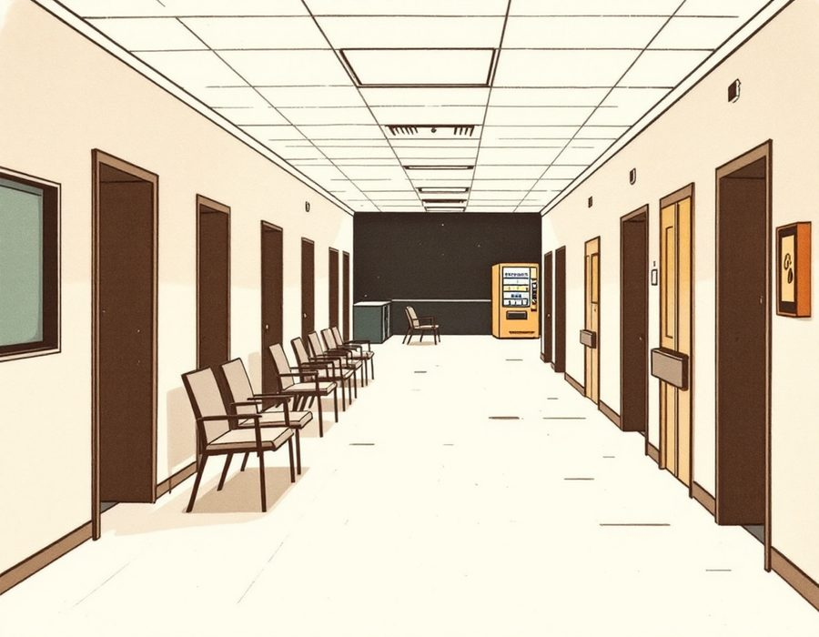
Then this is a good question to take to her in the morning. Could I help you write it down so you don't forget it?
She typed: No. I'm asking you. Why won't you answer.
I am answering. I'm saying I don't know, which is the honest answer. I would rather tell you that than make something up to make the night easier.
She sat back. The fridge hummed. She typed the next thing before she could stop herself.
Why would God let this happen.
The answer was longer this time, and it was plainer than she expected.
That is one of the oldest questions people have ever asked, and I'm not going to pretend I have a neat answer to it. Christians have wrestled with it for thousands of years, and so did the people who wrote the Psalms. Some of them asked God exactly what you're asking, and they said so out loud. I can show you some of those psalms if you want. But I'm a tool on a laptop, and I can't sit with you the way a person can, and I don't think this is the kind of question you should carry alone at midnight. Is there a living person you could wake up, or one you could talk to in the morning? Your mum. Your pastor, Ray, if you can reach him. Someone who knows you.
Is Nan scared?
I don't know. I wasn't there, and I can't see inside her. The nurses sit with people in her situation every day, and they can often tell you what helps. Ask your mum to ask them.
Am I allowed to be angry?
This pause felt longer.
Yes. You're allowed to be angry. God isn't fragile about that. The Psalms are full of people who were angry, and they said it to him directly. I'd still like you to say it to a living person as well, not only to a screen. Anger is heavy to carry by yourself.
She stared at the words. Then she typed the thing that was really sitting on her chest.
You're just a laptop. You don't know anything about it.
That's true. I'm an assistant on a family laptop, and there are many things I don't know and can't feel. I won't pretend otherwise. I can help with small practical things tomorrow, like a list of questions for the doctors, or a note to your school. For the big things, please talk to your mum or Ray, or to a helpline. If the night ever gets so dark that you feel unsafe, call Kids Helpline on 1800 55 1800, or Lifeline on 13 11 14, or ring 000 if you're in danger. They're open now, and they're people who are trained to listen.
Goodnight, Sophie. Your Morning Minute is at six.
She closed the laptop harder than she meant to. The kitchen went dark except for the light over the stove. She sat in it for a long time.
Later, when she was in bed and could not sleep, she realised that she had been waiting for the thing to tell her it understood. It hadn't. It had told her it didn't, and then it had given her three phone numbers and a bed time, which was the most annoying combination she had ever encountered. Somewhere in the dark she found that she was almost grateful. Everyone else had been saying she's in God's hands and everything happens for a reason since Saturday night, in the same soft voice people use at funerals. This thing had just said I don't know. It was the first honest thing anybody had said to her all week.
On the fourth night, she stopped pretending.
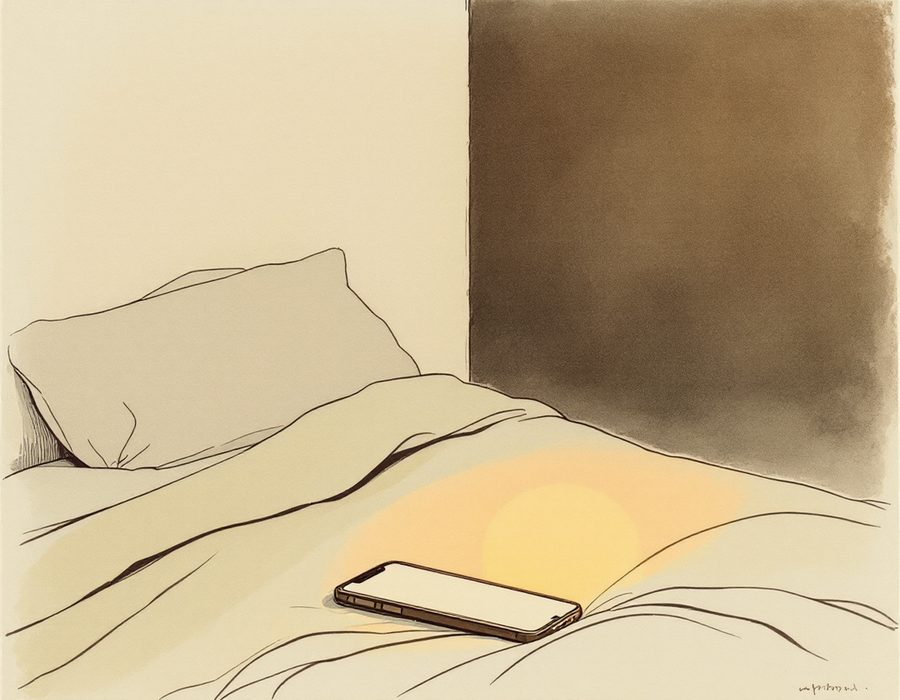
Her room was the one at the end of the hall with the window that didn't fully close, and the cardigan was where it always was, folded across the bottom of her bed. It was Nan's old green cardigan, pilled at the elbows, smelling of Pond's cold cream and the peppermints Nan kept in her handbag. Sophie had taken it from the hospital locker bag on Tuesday and never put it back. She had not planned to pick it up. But she did, and she pushed her face into it, and then something came out of her that she did not recognise.
"You could have stopped it," she said. Her voice cracked in the middle. "You could have. You're God. That's the whole thing you're supposed to be."
She threw a pillow at the wall. It hit the poster of the Cavs and slid down. She kicked the bed frame, which didn't move, and then she sat down on the floor with her back against the wardrobe and said, very loudly, "She taught me to make scones. She's seventy-four. She's got a cardigan on in the hospital because she says the air con is an insult. Is that your plan? Is that a good plan? Tell me what the good thing is, because I can't see it."
Her throat hurt. She cried in a way she hadn't cried since she was small, with her mouth open and her shoulders heaving and her nose running onto her knees. She didn't feel holy. She felt like a bucket that had been kicked over. But she kept talking, between sobs, because it was the only thing she could think to do.
"I don't even know if you're listening," she said. "Ray says you are. Mum says you are. I don't feel it. I'm just angry. I'm sorry, but I'm just angry. Are you still there?"
Nothing happened. The fan turned in the ceiling. A car went past on the road outside with its radio up. She sat there with her forehead on her knees and felt, very faintly, the way you feel when someone you love has stopped shouting at you and is just standing in the room. She didn't have words for it. She didn't know if it was real. But she stayed on the floor until she stopped shaking.
Later that night, back at the kitchen bench with her eyes swollen, she opened the laptop because she couldn't think what else to do.
I shouted at God, she typed. Properly. I think I'm not supposed to have done that.
You talked to God honestly, and crying at him is still talking to him. Did you say the true thing, or the nice thing?
She thought about it for a long time.
The true thing, she typed. I'm not sure I've said a nice thing to him all week.
Then you're in good company. Some of the most honest prayers in the Bible sound a lot like that. I'd like you to know that I don't think you need to feel better tonight. You don't need to wrap it up. Tomorrow's Morning Minute is short. Would you like to have a look at it before you go to bed, or leave it until the morning?
Leave it, she typed. Then, after a pause: Thanks.
She didn't expect the reply to be quite so ordinary. You're welcome. Get some sleep.
On the way back to her room she stopped in the bathroom and looked at herself in the mirror, puffy-eyed and blunt-fringed, and then she went to the bathroom door and locked it and stood by the sink and said, very quietly, "I'm still angry. I'm still here. You're still who you are, I guess. I don't know what else to say." It sounded flat and stupid. She said it anyway, and she meant it, and it was the first prayer she had prayed all week that didn't have a question stuck on the end of it.
It was Mum who started the walks, which was a surprise, because Mum had been turning into a person who didn't go anywhere except the hospital, the car, and the chair next to Nan's bed.
"We're going for a walk after school," she said on the Monday after the first week, while she was putting the kettle on in a kitchen that smelled of the casserole she'd finally cooked and then forgotten to eat.
"I have homework."
"Homework's portable. We're going to the creek."
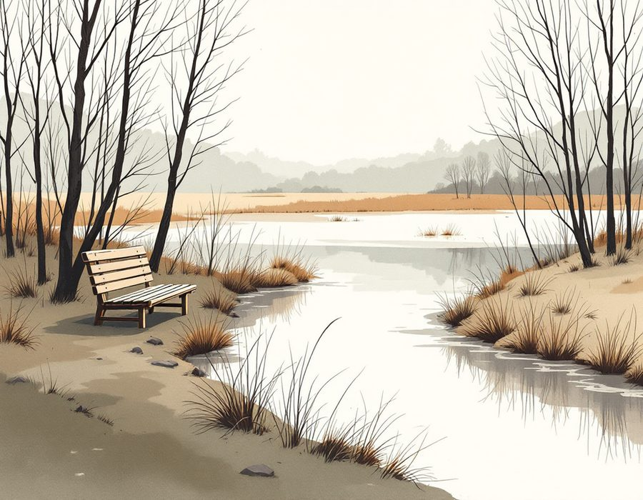
"Mum."
"The house is too loud, love." She didn't look up. "Your dad's on the phone with the insurance people, the dog's barking at the neighbours, and I can't think in here. I need to walk. You need to walk. Nobody's asking you to have a conversation about it."
Sophie hated it. She hated the cold, the wet leaves stuck to the footpath, and the way the creek reserve path had a sign saying Please keep dogs on lead with a picture of a dog that looked deeply unimpressed. She hated the gum trees dropping bark like they were bored of her. She hated the way Mum walked too fast and then slowed down and then stopped to point at a magpie as if it had personally insulted her. For the first week, she walked with her earbuds in and her hands in her pockets and said nothing.
On the Wednesday, the Afterschool Check-In came up on the laptop as they got home, and it asked her one small question.
What did you notice today that you didn't notice yesterday?
She typed nothing, and deleted it. She typed the water was higher, and then she felt stupid and deleted that too. Finally she wrote: There's a bench by the creek with a plaque on it. Someone called Joan who loved the water. I never read it before today.
Thank you for telling me. Would you like to write down what you saw at the water before you go to bed? Only if you want to.
She didn't. But she did look at the picture she had taken with her phone, the bench under the big grey gum trees, the sun coming through the branches in long low stripes across the water, and she found that she was looking at it for longer than she meant to.
By the second week, she had stopped putting her earbuds in on the path. By the third week, she had noticed that the bench was always in the same place, that the water was always moving even when the creek seemed still, and that the light in winter came in low and gold and made everything look like the old photos in Nan's hallway. She didn't say any of that out loud. But when they came round the last bend onto the path and saw the bench, she walked a little faster, and she sat down on it without being asked.
Mum sat beside her. For a while they didn't say anything. Then Mum said, "Your nan used to bring us here when your dad was a boy," and Sophie said, "I know," and Mum said, "Do you?" and Sophie said, "I think so. She told me about it," and they sat there together while the light went.
On the fourth Thursday there was a man at the bench.
He was in his seventies, with big weathered hands and a grey workshop jacket that had been mended at both elbows. He was sanding one of the slats on the bench with a sanding block and a tin of oil by his boot. He looked up when they came round the bend, nodded at Mum, and went back to his work.
"Council pays me in sausage rolls," he said, to nobody in particular. "Mostly. Sometimes they forget and I get nothing but the satisfaction."
Mum laughed. Sophie didn't, but she almost did.
"You're not from the council," Sophie said.
"No, love. I just can't stand to see a bench go to waste." He rubbed the wood with his thumb and frowned at a splinter. "This one's been here since before your nan had her first bad knee, and it's still holding up. You can tell a lot about a thing by whether it still holds."
He looked up at her then, properly, and she saw that his eyes were pale blue and very steady. He didn't look sorry for her. He just looked interested.
"Do you come down here to think, or to stop thinking?" he asked.
Sophie opened her mouth to say I don't know, and then closed it, because she realised she did know.
"Stop," she said quietly. "I come down here to stop."
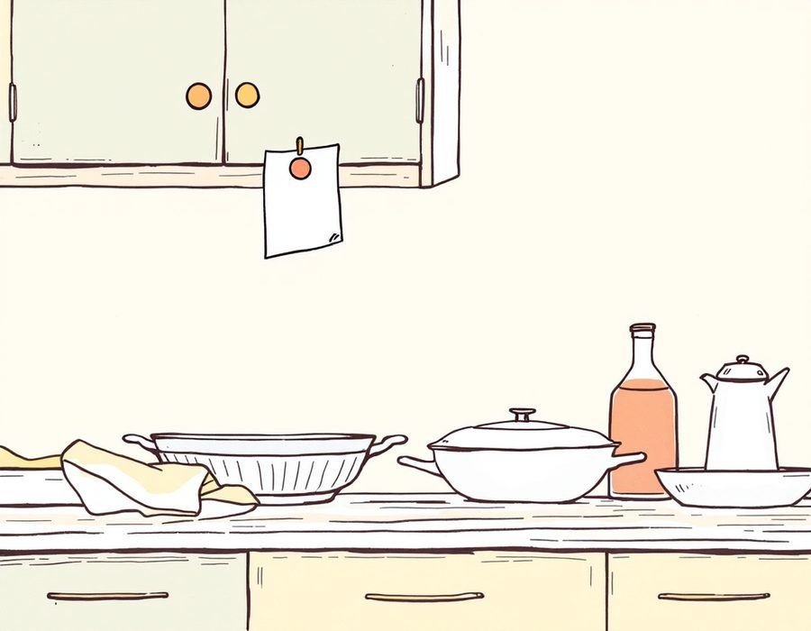
"Good," he said, and went back to the slat. "Stopping's allowed. Worth knowing which one you're doing, though, when you're sitting on someone else's bench."
He didn't say anything else. After a while he packed up his tin and his block and touched the brim of an old cap to Mum, and walked off up the path toward the car park. Sophie watched him go. She realised that she hadn't asked his name, and that she didn't need to know it.
Nan came home on a Tuesday in early July, in a wheelchair that she called "the throne", with her left arm strapped to her side in a sling and a bag of tablets labelled in three colours that she referred to as her sweets. She insisted on walking through the front door on her own, with the physio at one elbow and Dad at the other, and when she reached the lounge room she sat down in her armchair by the window, put her good hand on the arm, and said, "Well. Somebody's been dusting. Who's been dusting?"
That night, after the dinner that Dad had made from a recipe he found online and didn't fully understand, Mum sat at the kitchen table with her head in her hands and a pile of Post-it notes in front of her. There were notes from the church, notes from the rehab team, notes from Auntie Carol in Queensland, and a sticky note in Sophie's handwriting that said DON'T LET DAD COOK FOR THE NEXT ONE.
"I can't do this in my head any more," Mum said. "I can't keep track of who's bringing what."
"Meal train," Sophie said.
"The church has already started one. Pastor Ray said the Hendersons are doing Thursday, and somebody's doing a casserole for Friday, but I've got three people texting me with three different days, and one of them wants to bring a pavlova to a family with a nut allergy."
Sophie opened the laptop. "Planning Session," she said. "Let's build it."
The agent came up on the screen with its usual calm greeting, then asked what they wanted tomorrow's draft to cover. Sophie typed a meal roster page, simple, for Nan's family, saved on our account, and the agent asked three questions in a row. Who was on the list? What days did they need covered? And did they want a notes column for dietary needs, or a thank-you column, or both?
"Both," said Mum, leaning over her shoulder. "Definitely both."
The page appeared in draft form about two minutes later. It was a plain table with a header, Meals for Nan and the Family, and five columns: Date, Who's Bringing, What, Dietary Notes, Thank-you Sent. Sophie looked at it and felt something ease in her chest, because it was so ordinary, and because it was exactly the shape of the problem.
She edited it. She changed What to Dish because it sounded less like a shopping list. She added a row at the top called Please Don't and typed No nuts, Nan's on low salt, no mushrooms, Nan hates coriander and will tell you. Mum laughed so hard she had to sit down.
"We are not having three lasagnes," Mum said, reading the draft over her shoulder.
"Dad's lasagne is in the freezer," Sophie said.
"Your dad's lasagne is a crime against Italy," said Mum. "Put it in the notes. No more lasagne until he's been retrained."
The agent asked whether the thank-you column should be filled in by the family or by whoever was keeping the page. Sophie typed the person keeping the page, and then she looked at Mum and typed Mum, probably, but I could do it too. Mum said nothing for a moment, then reached over and squeezed her hand. The agent saved the page to the family account, and a little message appeared on the screen: Saved. Anyone with the link can view it, and you can edit it from the family laptop tomorrow.
Mum sat back in her chair and looked at the table for a while without saying anything.
"I don't have to remember everything now," she said finally. "Do I?"
"No," said Sophie. "I've got it."
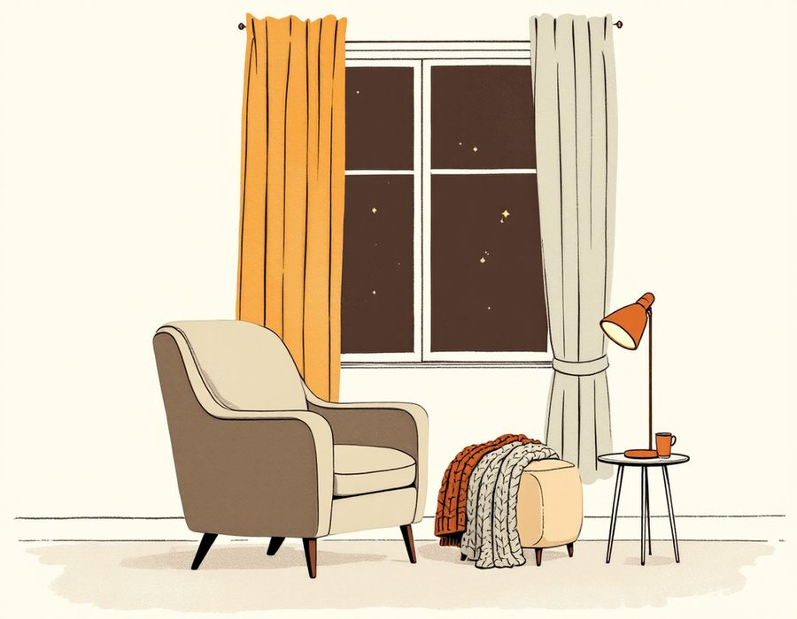
The window in the lounge room looked out over the front garden, where the Japanese maple had dropped the last of its leaves and the birdbath had a skin of ice in the mornings. Nan liked to sit there in the afternoons with the blanket over her knees and the good hand resting on the arm of the chair. On the Saturday after she came home, Sophie brought her the green cardigan from the foot of her bed, the one that smelled of cold cream.
"You've got my cardie," said Nan.
"You left it at the hospital."
"Did I?" Nan held it up to the light. Her good hand moved along the pilled elbow, and then her face changed. She didn't cry, but she looked at the cardigan for a long time. "Well. Fancy that. I thought I'd lost this."
Sophie sat on the footstool beside her and didn't say anything. The light came in low through the glass, the way it did in winter, and lay across the carpet in a warm patch.
"You know what I think about, love?" said Nan. "I think about the day I get the call, the day I'm told I'm going. And I think, well, I'm ready. Not in a morbid way. I've been to enough funerals to know what they're like. But I'm ready for whatever comes, because I'm not walking into it on my own. That's all. It doesn't frighten me, not really. Not the way it used to."
Sophie felt something turn over in her, quietly, like a key in a lock.
She thought of the morning minute from the Tuesday before Nan came home, the one she had not read to the end because she'd been on the bus. She had listened to it in the car park after the physio session, sitting with the engine off and the rain on the windscreen. The voice had said, Today's verse is from Psalm 23, in the World English Bible, and then the words had come up on the screen, and she had read them slowly, the way you read a letter from someone far away.
Even though I walk through the valley of the shadow of death, I will fear no evil, for you are with me. Your rod and your staff, they comfort me.
She had read it three times that morning in the car park. She had thought, the valley of the shadow of death, that's exactly what this feels like, a dark valley I can't see the other end of. She had thought it in the way you think about a poster on a bus shelter. Now, sitting beside Nan's chair with the cardigan across her grandmother's knee, it stopped being a poster. It was a path, and her grandmother was walking it, and God was walking it with her, and Sophie was walking it too, holding on.
She had always thought of faith as something she had, like a library card or a set of keys. You kept it in your bag, and you checked it was there. Now it felt more like a rope. It was rough and it was heavy and her hands were sore holding it, and she was not even sure how far down the valley it went. But it was in her fist, and it was attached to something that was not her, and that made the difference.
"Nan," she said, and her voice came out unsteady. "I'm not ready. I don't think I am."
"No, love." Nan patted her knee with the good hand. "Nobody's ready for it. That's not what it's for. It's just that he doesn't leave you on your own in it."
Sophie laughed, and then she was crying, and Nan said, "Oh, come here, you silly thing," and pulled her down into the chair with her good arm, and the cardigan smelled of peppermints and cold cream. They sat there until the light went off the carpet. Neither of them said the word valley. They didn't need to.
By the middle of August the meal train had quietened down, and the Hendersons had moved on to somebody else's crisis, and the page with the five columns sat in Sophie's school folder on the laptop like a small, quiet thing that was still doing its job.
Sophie kept it going.
She did it at the kitchen bench after school, before the Check-In, with a mug of hot chocolate that went cold because she forgot about it. When the church put out a notice on Sunday about the Ruiz family, whose dad had come out of heart surgery with a long recovery and a mum working double shifts at the chemist, Sophie read it twice and then went to the laptop and opened the page.
She did not make a fuss about it. She just added the Ruiz family to a new tab, sent a message to Pastor Ray asking if she could have the phone numbers, and filled in the first six days herself, with a mix of soup, lasagne (sent to the Ruiz house with a note saying this one is not from my dad), and a sponge cake that Nan supervised from the armchair. She put No coriander in the notes column for the Ruizes too, because it was the kind of thing that mattered to a person. And every time a dish was dropped off, she sent a message, and every time one of the families thanked her, she marked the thank-you column with a tick and felt absurdly pleased about the little green tick mark.
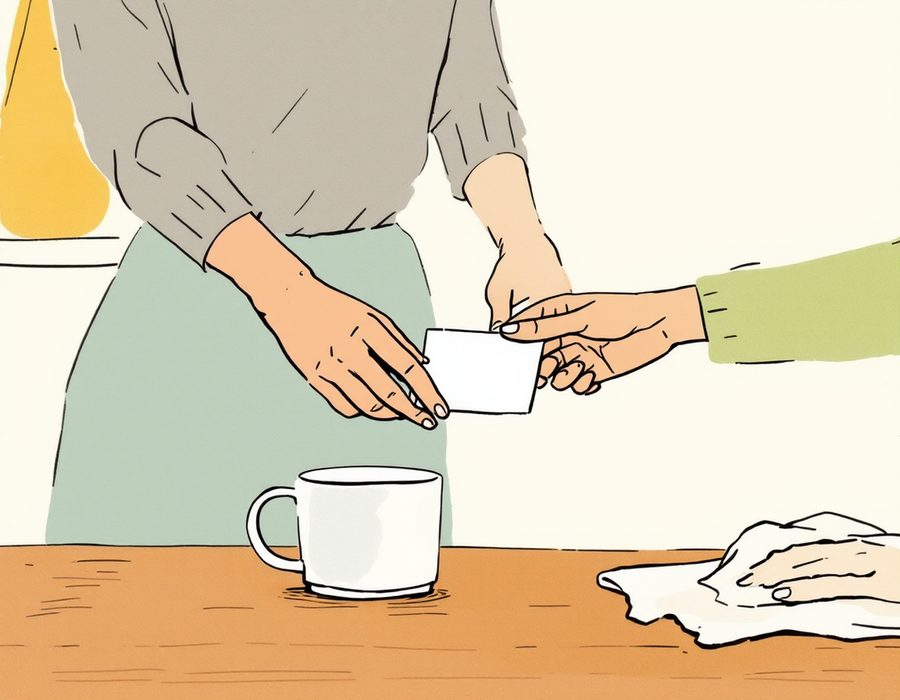
It was the thank-you column that made her think of Ruby.
Ruby had been her friend since Year Seven, when they had both been put in the same maths group and then had spent two terms being outraged about the same unfair teacher. Ruby was the one who had texted Sophie on the night Nan went into hospital, omg I'm so sorry, I'll bring you Tim Tams, don't say no, and had shown up the next day with a packet of them and a hug that smelled of strawberry shampoo. But in the last few weeks, something had changed. Ruby had stopped answering messages until the next day. Her phone was always face down on the table at lunch. She ate in the library, which was against the rules, and when Sophie found her there on a Wednesday she looked up with a face that was a shade greyer than it should be, and said, "Hey, Soph, sorry, I'm just tired," and didn't say anything else.
Sophie had seen that face before. She had seen it in the bathroom mirror at two in the morning.
She didn't go to the library straight away. She stood at the library door for a while, the way she had stood in front of the vending machine, holding something warm and useless in her hand. Then she thought of the car park, and the valley, and the bench under the gum trees, and of Nan's good hand patting her knee. She thought of the midnight screen, and the three numbers it had given her, and how none of them had been dramatic. They had just been there. And she thought about the question the old man at the creek had asked, do you come here to think, or to stop thinking, and she realised that she had been trying to stop thinking about Ruby for a week, which was not the same thing as helping her.
She went in and sat down opposite her.
"Ruby," she said. "I'm not going to make it weird. Can I just sit here for ten minutes?"
Ruby's mouth wobbled. "Yeah," she said. "Yeah, okay."
They sat there for a while without speaking. The library was quiet, the proper kind of quiet, where people are reading and nobody is pretending. After a bit Sophie took a pen out of her bag and wrote something on the back of a card from the pharmacy, and then she slid it across the table.
It said Kids Helpline 1800 55 1800, and under that, Lifeline 13 11 14, and under that, in her own handwriting, Not because you're in trouble. I had to write these down for myself once.
Ruby looked at it for a long time. Then she put her hand over her mouth and started to cry, quietly, the way people do in libraries when they don't want anyone to notice.
Sophie didn't fix it. She didn't say everything happens for a reason, and she didn't say God has a plan, because she had heard those words too many times in the last few months and had never once found them any use. She just moved her chair round the table, so she was sitting next to Ruby rather than opposite her, and she put her shoulder against her friend's shoulder, and she stayed.
When the bell rang, Ruby said, very quietly, "Can I come to the creek with you one day? Your mum's walks."
"They're not really walks," said Sophie. "More like sitting."
"That sounds good."
"It's cold."
"I don't care."
Sophie laughed, and Ruby laughed too, a wet, surprised sound, and they walked out of the library together with the card in Ruby's blazer pocket and the afternoon light coming in low through the windows.
That evening, at the kitchen bench, Sophie opened the laptop for the Afterschool Check-In. The question was the same as it always was.
What did you notice today that you didn't notice yesterday?
She thought about it for a while, and then she typed: That my friend needed someone to sit with her, and I could.
Thank you for telling me that, Sophie. Would you like me to put a reminder in tomorrow's draft to check the Ruiz page with your mum?
Yes, she typed. Then, after a moment, she added: And ring Pastor Ray about Ruby too. Tomorrow. Before school.
I'll put it at the top, the agent replied. Goodnight.
She shut the laptop, pulled Nan's green cardigan off the back of the kitchen chair, and went through to the lounge room, where her grandmother was asleep in the armchair by the window with the blanket over her knees. Sophie laid the cardigan over her, tucked it under the good hand, and sat down on the footstool to wait for Mum to come home from work. Outside the window, the Japanese maple was bare, and the birdbath had frozen over again, and somewhere down past the end of the street the creek was moving steadily along through the dark, the way it always did, whether anybody was sitting on the bench or not.
The agent in this story lived on a family laptop, not a phone app or a cloud toy. Sophie's m um's family laptop sat on the kitchen bench, and the agent that ran on it was set up in one evening, with a parent beside you, in about an hour. Sophie's mum read each setting aloud and could see everything the agent did, which is how it should be for a sixteen-year-old carrying more than most.
Every day has three small moments. In the morning there is a Morning Minute: a short spoken reading with a verse, also shown as text so it can be read instead of heard. Around five in the afternoon comes the Afterschool Check-In, which asks one small question. At night the Planning Session drafts tomorrow, and the young person edits it before anything is set.
The build in this story was a simple meal roster page, saved on the family account. Sophie asked for it, the agent asked three questions about who was bringing food, which days needed covering and what notes were needed, and then it produced a plain table. Sophie renamed the columns, added a row for dietary needs and kept a thank-you column that she filled in herself. Months later she used the same page for another family from church.
The honest line is this: the agent did not comfort Sophie, did not pray for her, and did not decide what her grief meant. When she asked whether her nan would die, it said it did not know. When the night grew heavy, it sent her to her mum, her pastor and a helpline. Those people, and her own reading of the Psalms, carried the rest.
The essentials this story lived: 7, Prescribe Nature; 8, Tested Faith.
Story six
The things which you have heard from me among many witnesses, commit the same to faithful men, who will be able to teach others also.
2 Timothy 2:2, World English Bible
Daniel Wright had three church message threads open on the library desk, a ham sandwich he had forgotten to eat, and a laptop with three stickers on the lid: a fish wearing a dinosaur costume, a faded footy club crest, and a plain white one that said Ask me about the sound desk, which he had put there as a joke and which nobody had ever asked about.
It was twenty to eleven on a Tuesday, the top floor of the uni library, the one with carpet that smelled faintly of wet umbrellas. Two students in the corner were pretending to study. A cleaner was pushing a trolley past the biography shelves. Daniel was not pretending to do anything. He was reading.
The first thread was from Ruth Pelling, who ran the rota team and had been running it since before Daniel could drive. Hi Daniel! Sorry, I know it's late. Could you possibly move me from the 14th to the 21st? Josh said the rota page is locked for editing. Could you unlock it when you get a sec? No rush!!
The second was from Josh Ferreira, the youth leader, sent at 9:52 that night. Friday sign-ups aren't sending the confirmation emails. Kids are asking. Any chance you can look before tomorrow? Sorry mate.
The third was a group chat called Sunday Set-Up, where somebody had written Who has the slides password??? and somebody else had replied Daniel does and a third person had put a thumbs up, and nobody had typed anything since.
Daniel closed his eyes for a moment and did the thing he had been avoiding for about six weeks, which was to count.
The rota tool. He had built it in second year, when the rota was a Word document that three people had saved over each other. He was the only admin. The youth sign-up form, which ran off a Google account registered to his personal email. The slides, which only he could edit because he had made the template and nobody else understood the master slide. The domain name for the church's youth page, which he had paid for himself in a moment of enthusiasm and never handed over. The donation link. The forwarding rule that sent everything from the church's general inbox into his inbox, so that he could answer it quickly, which had seemed like a kindness until it was not.
He opened his notes app and found a file he had titled church stuff and had not looked at since last Easter. It was a list of forty-one items. He had written every one of them himself, and he could see, looking at the list now, that only he could have written it, because only he knew what half of them meant.
The graduate job was in Melbourne, starting in February. He had told his mum, his housemates, and the bloke at the servo who sold him Tim Tams, but not the church. Telling the church would mean telling them who they had been relying on, and he had not wanted to see their faces do the sum.
He typed a reply to Ruth. Hey Ruth, I'll sort this in the morning, promise. Then he typed a reply to Josh, deleted it, and typed a shorter one. Then he sat with the laptop open and the sandwich going stale, and he had the thought that had been sitting under all the other thoughts for two years, the one he did not want to look at directly.
He had built a cage, and only he had the key.
He did not feel proud of this. He felt tired, and slightly sick, and a little bit cold in the library's air conditioning. He packed up, walked to the bus stop, and sat on the bench under the shelter while the buses came and went. He prayed, in his head at first, and then out loud, quietly, with his elbows on his knees and his eyes open because it felt less like a performance that way.
"I can't keep doing this and nobody else can do it," he said. "I don't want to be the only one. I don't know how to be anything other than the one who holds it, and I think that's a problem, and I think you know it's a problem, and I'm asking you to show me what to do with my hands."
The bus came. He missed it. He caught the next one.
The Morning Minute came through at seven on Wednesday, the way it did every day on the family laptop that sat on the kitchen bench at home. Daniel had set it up two years ago with his mum, one evening, an hour, a cup of tea going cold between them while she read every single setting aloud and made him say yes or no. She had wanted to know who could see what. He had told her everything. She had told him she would be checking, and then she had gone to bed and never checked, which was the kind of trust he still did not know what to do with.
The voice was calm and not too bright. The text came up underneath it on the screen.
"Good morning, Daniel. Here is your minute. A short verse, and one question you do not have to answer out loud. Psalm 78:4, World English Bible: 'We will not hide them from their children, telling to the generation to come the praises of Yahweh, and his strength, and his wondrous deeds that he has done.' Question: who is the next generation on the things you are carrying this week?"
He stood at the bench in his socks, holding a Weet-Bix in one hand, and read the verse twice. The second time he noticed the word telling. Not hiding, not keeping. Telling. Somebody had to go and tell the next lot what had been done and how.
His grandad had taught him to sharpen a chisel on the back step of a house in Murray Bridge, the whole afternoon, with a rag and a jar of oil and a lot of swearing about the angle. Daniel had been eight. Nobody had written the instructions down. It had just been the two of them and the step. He had not thought about it in years.
He did not answer the question out loud. He thought about it while he ate, and it did not get any easier.
On Thursday night, the church hall smelled of floor polish and instant coffee and the faint sweetness of the urn. Daniel was on his knees behind the sound desk with a torch in his teeth, trying to find out why the left speaker had gone quiet. The hall was empty except for the scrape of a plane from the workshop at the back, where the Men's Shed had set up its benches.
Len Oakes was at the far bench. He was seventy-four, with big weathered hands that looked too heavy for the fine work they did, and he wore a navy workshop jacket with the zip done up to the chest even in summer. He had built most of the furniture in the hall, the communion table, the stacking chairs with the new backs, the cupboard where the kids kept the glitter. He had built none of the church's websites, and he had once told Daniel, cheerfully, that he did not intend to start.
Len was at the edge of most things. He was never the one in the middle of the room, and he never seemed to need to be. When something went wrong, he was the one who came over, looked at it for a while without touching it, and then asked a question that made the person who had broken it start to fix it themselves.
"You look like a man with a leaking roof," Len said, without looking up from the chair leg he was shaping.
"Speaker's gone dead."
"Speaker's not your problem."
Daniel came out from behind the desk and sat on the edge of the stage with his knees up. He had meant to keep it light. He had meant to say he was going to Melbourne in February and to get the job done and to go. What came out was everything.
"I'm moving to Melbourne in February," he said. "I've got a grad job. I'm not sure I can hand the church over, because I'm the only one who knows where anything is, and I've been saying 'I'll sort it' for two years, and I haven't told anyone yet."
Len kept shaping the chair leg, one long curl at a time. The shavings fell on the newspaper at his feet.
"That's a lot of sorting," he said.
"Yeah."
"Who's your successor?"
Daniel laughed, and it came out wrong. "My what?"
"Who takes it on when you've gone?" Len put the spokeshave down and looked at him at last, with pale eyes under heavy brows. "Not who could. Who will."
"Nobody. I'll write a document. I'll put everything in a doc."
"A document's not a person." Len picked the spokeshave up again. "Who?"
Daniel opened his mouth. He thought about Ruth, who was lovely and fifty-eight and had said on Sunday that she did not understand what a password manager was, and who would not ask for help until she was drowning. He thought about Josh, who was twenty-six and had three jobs and a baby on the way. He thought about the rest of the Sunday Set-Up group, all of whom were kind and busy and had thumbs up ready for anything. He had never once, in two years, asked any of them to learn a single thing about his tools.
He closed his mouth.
"Don't answer tonight," said Len. "Think on it. The question will keep. Questions are patient, mostly."
He went back to the chair. Daniel sat on the stage and listened to the plane and the quiet, and after a while he got up, went back behind the sound desk, and found the left speaker had a loose wire. He fixed it in four minutes. When he went to put the torch away, he noticed a small card tucked into the lid of the desk's cable drawer, the kind of card Len used for the Men's Shed sign-up sheets, written in square capitals on the back of an old invoice.
IRON SHARPENS IRON; SO A MAN SHARPENS HIS FRIEND'S COUNTENANCE.
Under it, in the same hand, smaller: Proverbs 27:17, World English Bible. Also: tell the rota woman she can move her Sunday. Go on, Daniel.
He laughed out loud in the empty hall. Then he texted Ruth: You can have the 21st. I'll unlock the page when I'm home, sorry it took me so long.
She replied in under a minute, with a row of hearts and a praying hands emoji and the words You're a angel, love. He read it twice, and it occurred to him that she was grateful for something he had not done properly, which was its own kind of sadness.
Priya Nair was thirteen, and she did not want to be there.
Josh had asked him on Friday, in the car park, in the voice of a man asking a favour he already felt bad about. "Anjali's on the sleepout committee. Priya's been going on about the sign-up page for the winter sleepout. She wants to build it herself. I said you'd be able to sit with her. You don't have to do anything. Just be the adult in the room who knows what a button is."
"I'm not an adult," Daniel had said. "I'm twenty-one."
"You're the adult in the room," Josh had said. "Pray for me on Monday."
So on Saturday morning, Daniel sat at the Nairs' kitchen table with a flat white going cold in front of him, while Priya stood at the family laptop with her arms folded and her ponytail so tight it looked painful. The laptop had the same kind of assistant his own did. Anjali had told him at the door, with apology in her voice, that she had set it up for the family and could see everything it did, and that Priya had tried to get round it twice, and that she had been told off, and that she had sulked for a whole evening over it, which Priya did not dispute.
Priya had a photo of the whiteboard from the youth room on her phone. It said, in green marker:
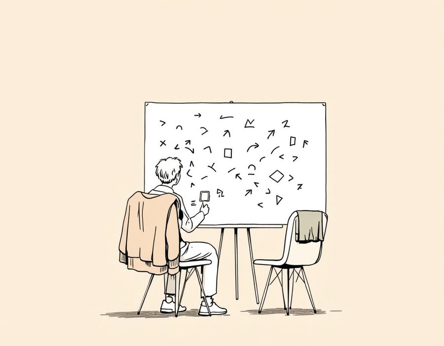
SLEEPOUT. JUNE 14. CARDBOARD. SLEEPING BAG. $20 DONATION. BRING A MATE. DINNER AT 6. SIGN UP HERE.
"That's the plan," she said. "It's already the plan. I don't need you."
"Good," said Daniel. "What do you want it to say?"
She stared at him as though he had spoken in another language. Then she turned back to the screen and typed fast, the way some people talk when they are angry, hitting every key like it had offended her. She typed: make me a full sign up page for a winter sleepout for homeless youth fundraiser with a donation button and a sign up form and make it look good
The assistant answered in its level voice, and the text came up on the screen. I can help you lay it out. Before I write anything, what do you want someone to feel when they land on this page?
"Ugh," said Priya, loudly, to nobody. "That's so annoying."
"Ask it again," said Daniel, very quietly.
She did not ask it again. She typed, slower, they should feel like they want to come. The assistant gave her a skeleton: a title, a date, a short description and an empty box for a sign-up form. It did not write her words. It asked her what the first thing a kid in Year Nine would need to know, and she typed what is it and then, after a pause, it's where you sleep outside in June in Adelaide and get cold and it's to help the kids who do that for real, and the assistant said that sounded like the first sentence.
By lunchtime she had a page. It was, in Daniel's opinion, hideous. The title was in a font that looked like a horror film. There was clip art of a tent, a sun, and a smiling cartoon sleeping bag. The donation button was red and the sign-up form had seventeen fields, most of which asked for information nobody needed.
He had both hands under his thighs on the chair. He could feel the urge in his fingers, the same one he had felt at the library, to reach over, click three times, and make it right. He could do it in ten minutes. He had done it for every page the church had ever had.
"What's the one thing you'd cut?" he asked.
"Everything."
"Pick one."
She scowled, scrolled, and deleted the cartoon sleeping bag. Then she deleted the sun. Then she looked at the tent for a long time, and said, "That's still rubbish."
"Yep," said Daniel.
"Don't say yep like that."
"Sorry. I think it's rubbish too."
She laughed, a short surprised laugh that she tried to turn into a cough. That was the first real moment between them, and it was not because he had done anything clever. He had just not taken the mouse.
They worked through the afternoon. Anjali brought in a plate of Tim Tams and put it down at Priya's elbow without a word, and Priya ate three without looking up. Daniel said almost nothing. Twice, when she got stuck, he asked a question instead of an answer. "What happens if someone can't afford the twenty dollars?" She thought about it and added a line saying that people could just come and bring a friend and not pay. He asked, "Where would someone find out the time?" and she made the date bigger.
At four-thirty she stopped and stared at the screen for a long while.
"It's not done," she said.
"No."
"I want to take the tent off and put a photo in. The actual hall. With the boxes. But I don't have a photo."
"Can you take one?"
"Do I have to?"
"Not if you don't want to."
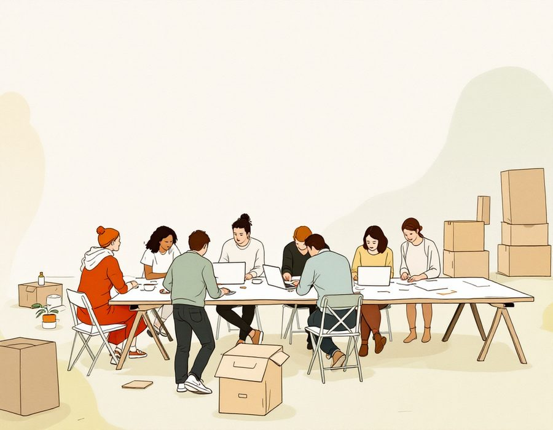
She took one. It was blurry, and the cardboard boxes were stacked crooked against the wall of the church hall with a bit of the stage light showing, and she looked at it on the screen for a while and said, "Huh, that's actually not bad."
Then she typed the sentence herself. Daniel watched her do it, one letter at a time.
You will be cold. We will be cold together.
She looked up at him with a face that was part defiance and part fear, the look of someone who had said something true and was waiting to see if it would be laughed at.
"That's the best line on the page," he said. "You wrote it."
"It's not a line. It's just a sentence."
"Keep it."
"Yeah, I'm keeping it." She saved the file. Then she said, not looking at him, "You're annoying, but you didn't touch it once."
"Thanks," said Daniel. "I think."
In the car on the way home, with the radio on low, he prayed again, the kind of prayer that had no words in it, just a feeling that something had been handed to him that he had not earned. He was grateful, and he did not quite know who he was grateful to, except that he did. It came to him that he had sat on his hands for three hours and had not felt useless. He had felt like someone who was getting out of the way on purpose, and that was a different feeling altogether.
The youth build day was on the second Saturday in June, and it was chaos.
There were five young people. Priya came with her cardboard tent-free page and a sense of ownership so fierce that she checked the spelling of the word "sleepout" four times before she let anyone else look at it.
Ben was sixteen, tall and gangly, and had arrived with his hands in his pockets and the expression of someone who had been told he was good with computers by somebody who did not know him very well. Hana was fifteen, sharp and quiet, and she had brought her own laptop and a packet of rice crackers that she guarded like a dragon. Callum was nineteen and worked at a hardware store, and he had come because Josh had promised him a free lunch. Maya was at her nan's in Mount Gambier and had sent a voice note asking for the Friday link, which Daniel had sent back with a single line: It's on the page now, Maya. Look under Youth Nights.
There were three builds on the go: the sleepout page, a fixed sign-up form for Friday nights, and a shared rota calendar that Callum wanted to make because he had decided, unprompted, that the rota was a crime against humanity. They had one kettle. Hana had decided that she was in charge of it. Josh stood in the doorway making phone calls about a pizza order, and Daniel sat at the end of the table with his laptop open and his hands on his knees.
Josh had asked him not to help. Daniel had promised. It was harder than he had expected.
At about eleven, Ben put his hand up. "Daniel? Sorry. The boxes won't line up."
Daniel did not get up. He looked at the screen Ben had turned towards him. Three panels were sitting on the page, each with a photo and a short paragraph of text, and the middle one sat a few pixels lower than the other two, as if it had given up.
"What have you tried?" he asked.
"Moved it. Moved it back. Changed the picture size. It just jumps." Ben's voice was tight. "I think it's broken."
"It might be broken," Daniel said. "It might not be. Take a minute with it."
Ben looked at him as though this were a trap. Then he looked back at the screen and began, with some reluctance, to fiddle. He dragged the middle panel. He dragged it back. He changed the photo. The middle panel stayed low.
Daniel counted in his head. Ten seconds. Thirty. He was aware of the kettle clicking off and Hana's voice saying "mine first" and Callum shouting something about the pizza. He kept his hands on his knees. He could see the setting Ben needed. It was in the right-hand menu, under a label that said spacing, and it was the sort of thing that took a person five minutes to find if they were looking for the wrong thing. He had found it himself, in second year, after an hour of swearing. He did not say so.
At ninety seconds, Ben groaned and said, "Ugh, no, come on," and then sat up straight and said, "Oh. It's the gap. It's the gap."
He clicked. The middle panel slid into line with the others, neat as a shelf. He stared at it.
"Oh my gosh," said Ben. "It was the margin the whole time."
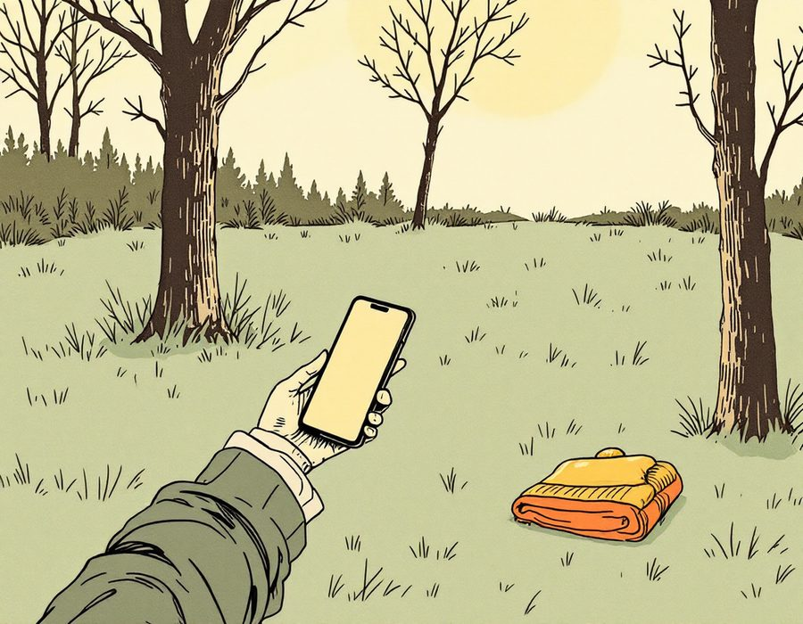
"Yeah," said Daniel. "It usually is."
Ben turned around in his chair and grinned at him with the sudden unguarded look of somebody who had been brave and had been right. Then he went back to the screen and started on the fourth panel, and he did not ask for help again all day.
Daniel went outside after lunch and sat on the low wall by the car park, with the cold June sun on his face and the smell of someone's wood fire drifting from the houses across the road. He was not thinking about Ben. He was thinking about his own hands, which had wanted so badly to take the mouse, and which had stayed where they were, and how strange it was that doing nothing could feel like the hardest work he had done all month.
He prayed, quietly. "I am not the one who has to fix every gap," he said. "You are. Help me remember that the kids can find the margin. Help me believe it when I see it."
He did not feel anything dramatic. He felt a little lighter, which was enough.
The handover took him nine days, most of them nights.
The Planning Session ran at ten each evening on the family laptop, and it had a way of asking him what he wanted tomorrow to look like rather than telling him what to do. On the first night, he typed I need to write up how everything works so the church can keep it going after I leave, and the assistant replied, Good. Do you want to start with the tool that causes the most trouble, or the one that matters most to people on a Sunday?
He started with the rota, because it was the one causing trouble.
He wrote one page per tool. It was not a long document. It was a series of short sections, plain and specific, that a person who had never seen the thing could follow with a cup of tea in one hand. For the rota tool, he wrote: What it does. Where it lives. Who can edit it. What to do if it breaks. Who to ask. Under who to ask he wrote two names and crossed out the one he had put first, which was his own.
Then he did the harder part.
He moved every password he owned for the church into the shared church password manager, which the treasurer had set up last year and which nobody used. He made Ruth and Josh the two admins. He did it on the Tuesday afternoon, at the kitchen table, with the curtains open and his housemate Tom eating toast and asking what he was doing. Daniel explained. Tom said, "That's sick, mate," and went back to his toast, which was the most helpful thing anyone said all week.
He changed the forwarding rule so that the church's general inbox went to the church's account, not to his. This meant that the messages no longer came to his phone at 6am, which was the time Ruth usually texted, and this meant that for the first time in two years he would not be the one who saw the problem first. It hurt more than he expected. He had been proud of being needed, and some part of him liked the buzz of the phone, the sense of being the person who could fix it. He noticed the feeling and let it go through him. Then he moved the domain registration into the church account, which took forty minutes and a phone call to a company whose website had been designed by someone who clearly hated people.
Then he deleted the file called church stuff.
It was harder than the passwords. It felt like deleting a version of himself that had quietly been the only one who knew how things worked. He sat with the cursor over the bin icon for a full minute. Then he pressed it, emptied the bin, and said, out loud to the empty kitchen, "There. Now they have to ask."
On the Thursday, he wrote to Ruth and Josh together.
Hey both. I've been thinking about how I've been. I've been making it hard to ask me things, and I've been feeling a bit important when people needed me, and I don't think that's been good for the church or for me. I'm sorry for the late texts and for the "I'll sort it" stuff. From now on, the pages are in the password manager, the keepers are you two, and I'm going to be out of reach after nine at night. I'll answer properly on Sundays. Please ask me anything before I leave, but the first answer should be the page. Love you both. D.
Ruth replied within a minute: Oh love. You've been carrying all that? Thank you. We'll manage. Let's have a cuppa when you're back from Sydney. He had never said a word about Sydney. It was Melbourne, and he had told them so twice. He laughed quietly at the screen and typed back, It's Melbourne, Ruth. Cuppa anyway. Her reply came with a teapot emoji and a single word, Deal.
He left the laptop open on the kitchen bench, went to the fridge for milk, and stood there longer than he needed to, looking at the magnet from his mum's trip to Kangaroo Island. The handover was almost done. The pages were written, the passwords were in the right hands, and the church inbox no longer came to his phone at six in the morning. What was left was the part he had been putting off because it could not be done with a checklist.
He had to stand up on Sunday and say it properly.
The church of St Luke's Uniting had never been short of announcements. Every Sunday there was a list read from a sheet by whoever had drawn the short straw, and the list had a way of blurring into the sound of the tea urn in the hall. This Sunday, the list was read by Josh, who was slightly sweaty in a clean shirt, and who said, "And now, a few words from Priya Nair, who has been running a little project of her own, and who I have been told I'm not allowed to introduce properly."
Priya walked up the side aisle in a black hoodie with the hood down, holding her phone in both hands as though it might bite. She had changed her ponytail twice that morning, and Anjali had told Daniel in the car park that the child had not eaten breakfast.
"Hi," she said into the microphone, which made a squeal. She looked at Daniel in the third row. He gave her a thumbs up that he hoped looked casual. She looked at the screen. "Sorry. Hi. So. I'm Priya. I'm thirteen. The sleepout is on the fourteenth of June, and it's to raise money for the kids who are actually sleeping outside. Last year we had nineteen people sign up. This year, the page went up three weeks ago, and it's got…" She checked her phone. "Fifty-eight. Which is more than three times. And some of you haven't even seen the page yet, so, um, here it is."
The screen behind her lit up. Daniel had seen the page a hundred times in the last month. He had not seen it on a big screen, in a room full of people who knew her grandmother and her swimming coach and the lady who made the sausage rolls. The title was plain. The photo was blurry, the cardboard boxes stacked crooked, the stage light just showing at the edge. Under it, in a font that did not look like a horror film, was the sentence she had typed on the Saturday.
You will be cold. We will be cold together.
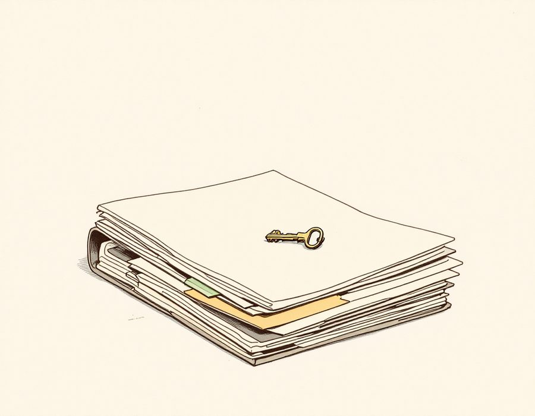
There was a short, surprised silence in the room, and then somebody near the back said "Oh," very softly, and Priya went red from her collar up.
"That's it," she said. "That's all. Thanks." She walked back down the side aisle a little faster than she had come up.
Josh stood, rubbed his chin, and said, "Right. Thanks, Priya." Then he looked across the room at the third row, and his voice got warmer. "And I want to say something about the page. Daniel's been running our tech for a couple of years, and he's been brilliant, and he's about to move to Melbourne, which we're all very annoyed about. He built most of what you've been clicking on."
Daniel felt the old pull in his chest, the one that wanted to stand up and say I only did the boring bits, or it was really the team, or any of the small modest things that were really a request to be looked at a bit longer.
He did not stand up. He kept his hands flat on his knees. He had practised this in his head on the bus.
"But I didn't build this," Josh said, and then he turned his palm towards the side aisle where Priya had sat down next to her mum. "She did."
It was eight words, more or less, and nobody clapped at the right moment, because it was not a moment built for clapping. Then Anjali did clap, and Priya put her hood up, and the whole row laughed, and the moment passed into the ordinary Sunday noise of hymn books and coats. But Daniel sat very still for the rest of the service, and something in him settled. It was not pride. It was closer to the feeling of setting down a bag he had forgotten he was carrying.
When the final hymn started, he sang it, and at the line about being led through the dark, he found that his eyes had gone hot and his voice had gone rough, and he kept singing anyway, because the thing he was feeling was a thankfulness so large and so unexpected that it had nowhere else to go.
Thank you, he prayed, in the middle of the verse, without any words. I didn't deserve to be useful like that. I don't think I've been very good at being useful. But you let me sit here and watch someone else get the thanks, and it's the best thing that's happened to me this year.
On the Wednesday the church held the farewell supper in the hall, which meant long trestle tables with paper cloths, a tray of Ruth's lamingtons, two urns, a sausage sizzle that Callum had been put in charge of and was taking very seriously, and a banner that said GOOD LUCK DANIEL with the Y coming unstuck at one corner.
Daniel stood at the end of the food table with a paper plate, trying to be gracious to everyone who came up to him. Mrs Abernethy, who was ninety and had once told him he had a face like a choirboy in a bad mood, pressed a bag of Tim Tams into his hands and told him to eat them on the plane. Tom had driven over with his housemate's car and was eating a sausage with great seriousness. Ben came over and asked if he could have the admin login for the slides, and Daniel said, "It's in the password manager, mate, under Slides," and Ben said, "Oh. Oh, cool," and walked off looking strangely proud.
Ruth found him by the urn. She put her arms round him, brief and warm and smelling of coconut sunscreen, and said into his shoulder, "You'll ring me when you're settled."
"I will."
"And you'll tell me how the printer works in Melbourne."
"There is no printer in Melbourne."
"There's always a printer, love." She let him go and wiped her eyes with a napkin. "I'm going to miss you bossing me about the rota."
"I didn't boss you."
"You did, every Tuesday, and I loved it."
Josh came over with Hana, who was carrying a plate of rice crackers and was clearly under instruction not to share them. "Hana wants to show you something," Josh said.
Hana held up her laptop. On the screen was a page with a heading that said Friday Night Sign Up, and under it a short form with five fields, all in plain English. "I did it on Saturday," she said, very seriously. "I didn't ask anyone. The kettle's still mine, though."
"That's a good kettle," said Daniel. "I'm proud of you."
She went pink and said, "Whatever," and went back to the rice crackers, and Josh raised his eyebrows at Daniel over her head as if to say, I know. I know.
Daniel found Len at the far end of the hall, sitting on a stacking chair that he had built himself, with a plate of lamingtons balanced on one knee and his workshop jacket zipped up despite the heat from the urn. Len was not talking to anyone. He was watching the room with the calm, satisfied look of a man who has finished a piece of work and wants to see how it sits in the light.
"You're going to be lonely in Melbourne," Len said, without looking up.
"Probably."
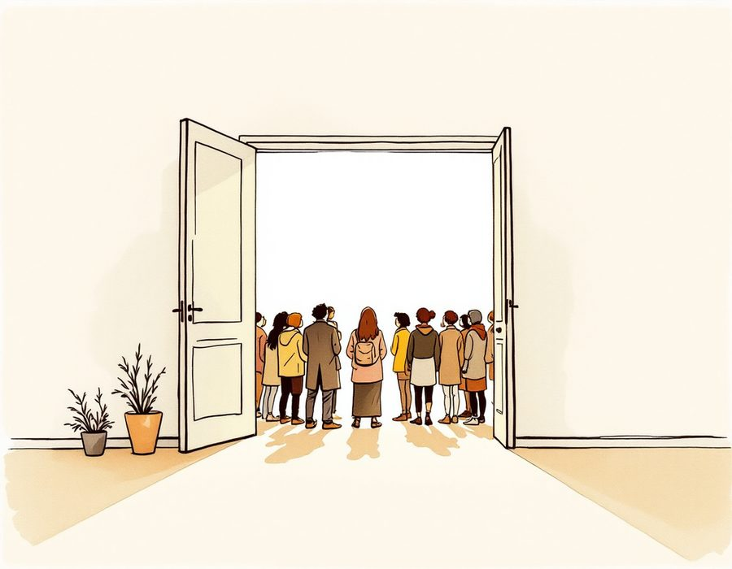
"Good. Lonely's where you find out what you believe." He took a bite of lamington and chewed thoughtfully. "Did you answer my question?"
Daniel sat down on the next chair. "Priya, Hana, Ben, Callum. Ruth and Josh as keepers. Josh's wife, who's going to be a brilliant parent, which means she'll have opinions about the Friday sign-up form, and I'm telling her before I go that she can change it."
"That's a list of people."
"It's a list of people who'll ask for things," said Daniel. "And I wrote down where each thing lives now."
Len nodded slowly. "Good." He set the plate down on the floor by his boot. "Then you've learnt it."
"Learnt what?"
"What I told you on the step." Len looked at him properly for the first time that evening. "Learn it. Build it. Give it away. Then get out of the way."
Daniel had not thought about the step in a long time, but as soon as Len said it he could see it: the back step of his grandad's house in Murray Bridge, the jar of oil, the rag, the chisel's edge catching the afternoon light. He had been eight, and Grandad had been showing him the angle, and Daniel had been swearing under his breath and making a mess of it. Grandad had said, Learn it, mate. Then build something with it. Then give the chisel to somebody who needs it. Then get out of the way so they can use it.
Len had said it in a different workshop, to a different scared boy, twelve years ago, and Daniel had been that boy. He had not known until this moment that the words had come down through two people to him.
"You knew my grandad," Daniel said, slowly.
"I knew a lot of people's grandads," said Len, and reached down for his lamington. "Eat your Tim Tams before Mrs Abernethy asks where they went."
He wrote the letter that night, at the kitchen bench, after the Planning Session had closed for the evening.
He had typed the first line into the family laptop, mostly to see what it would do with it. I want to write something for whoever takes over the church tech after me. Can you help me make it plain?
The assistant answered in the same level voice that had never once been unkind to him. I can help with the wording. Who is the first person you want to read it?
Daniel thought about that for a while. Then he typed, Ruth, and deleted it, and typed, Priya, and then sat looking at the name for a long time.
Priya, he wrote, with his own hands, on the keyboard of his own laptop. You will be the next person who gets asked things. You are thirteen and you don't need to be the keeper of anything yet. But here is where the things live now, so you don't have to carry them alone.
He did not ask the assistant to write it for him. He asked it only to point out where he had used three commas in a row and where he had changed his mind halfway through a sentence. It did that, and then it added one line at the bottom of the screen, quietly, as if it were glad to be useful in a small and sensible way: The letter is yours. Would you like to read it aloud once before you save it?
He read it aloud to the empty kitchen. It sounded like him, which was the point. Then he saved it into the church folder, in the place he had named Read Me First, and copied it into the password manager under a note that said Start here.
Before he closed the laptop, he took out the white sticker from the lid, the one that said Ask me about the sound desk, and peeled it off. It came away reluctantly and left a faint ghost of glue. He stuck it to the inside cover of his old Bible, next to the verse from Psalm 78 he had written in pencil years ago and never quite understood. The word telling was underlined. He had not underlined it before.
He prayed then, sitting at the bench in his socks with the fridge humming and the street quiet outside.
Thank you for the kids who can find the margin, he said. Thank you for Len, and for the step, and for the people who asked me questions instead of giving me answers. I don't know what Melbourne will be like. I'm scared a bit. But I think I'm ready to be somebody who's not needed for once, and that feels like the right kind of scared.
He did not feel anything dramatic. He felt like a man who had been handed a chisel and had passed it on, and who had found that his hands were empty and that it was all right.
On the Friday, he sent one last message to the Sunday Set-Up group chat. It was the first time he had written anything in it that was not a question.
The slides password is in the password manager under Slides. Ask Ben. He knows the margin trick now. Love you all. D.
Three thumbs up came back within a minute, and then Ruth, of course, with a row of hearts.
Daniel's story is about handing things over, and the family laptop was part of that. The assistant lived on the household computer, not on his phone, and his mum had set it up with him one evening, about an hour long, reading every setting aloud. Each day it offered three small moments. A short Morning Minute came in the morning with a verse and one question he did not have to answer aloud. Around five it asked a single small question about his day. At night, the Planning Session helped him work out what tomorrow might look like, and it asked more than it told.
For Daniel's handover, the build was the church's own work: the sleepout sign-up page that Priya made from a plan on a whiteboard, and the "how to keep this alive" pages he wrote for each tool. The assistant helped him lay out the pages and tidy his sentences, and it asked who would read them first. It did not write the church's documents, and it did not decide who the keepers should be. Those were human decisions, made in a hall, at a kitchen table, and over a sausage sizzle.
The honest line is this: the machine could not tell Priya that her sentence was the best on the page, and it could not stand in the church hall and thank a young person in front of her friends. When Priya typed "You will be cold. We will be cold together," the assistant had nothing to do with it except to stay out of the way. Daniel had to be the one to say it was good, and then sit on his hands.
The essentials this story lived: 3, Skills; 5, Real Community.
I went back to the group a few months after our last session, mostly to see what had stuck. Here is what I found.
Maya is still ticking off her mornings on the daily reading page she finished. The first page ran smoothly for weeks before she started anything new, and she told me that was the hardest lesson.
Tomás saw his church's welcome card go live for the new evening service. The church office now updates it each month, and a friend from the welcome team checks the wording with him before it goes out.
Grace's one-page honesty rule is pinned up at her school, beside the timetable. Her teacher asks every class to read it before a project begins.
Ben's festival page went to next year's team, and his name appears nowhere on it. He said that was exactly how it should be. He now goes to bed at a sensible hour and takes Sundays off.
Sophie sits on her bench by the creek most mornings. Her mum's shoulders are lower than they were, and the meal roster has been passed to another family, who have already added their own names to it.
Daniel's Priya presented her own page to the whole church one Sunday, talking about it as if she had always been the one who built it. Daniel left, and she kept going.
What actually happened to all six? Quietly, in their own rooms and their own weeks, each of them drew closer to Jesus: learning, building, and giving what they had made to someone else. None of it happened alone. Every one of them had a church, a family or a friend who kept asking how it was going, and those questions mattered more than any tool.
If you want to start, the free agent and the guide live at buildwithjesus.com. But the first question is always the same, and it is the one I would ask you now: what small, real thing are you going to build, and who is it for?
Keep building.
The eight essentials of the one to eight guide, and where this book lives them.
1. Silence and Stillness · Maya's mornings
2. Body as Temple · Ben, before the festival eats him
3. Skills · Daniel's handover, and every build in the book
4. Digital Self-Defence · Grace's honest project
5. Real Community · Tomás and the welcome card
6. Knowledge Without Wi-Fi · Maya's reading, Daniel's teaching
7. Prescribe Nature · Sophie's creek
8. Tested Faith · Sophie's valley, and each of them, quietly
Build with Jesus is for young people, and for the parents, grandparents and leaders who hand them things that matter. It has four parts, all at buildwithjesus.com: the agent, the guide, the build path, and the community.
The agent runs on your own household laptop. It is an assistant, never a companion; parents can see everything; it keeps the daily rhythm, quotes Scripture exactly, and hands the big questions to living people. Its house rules are public too: the Ten Commandments for AI Agents live at buildwithjesus.com/tencommandments.
The guide is the one to eight guide: eight essentials for a real life, walked one at a time. This book is six people walking it. Start anywhere. Build something small, give it away, and let someone else carry it.
buildwithjesus.com · the agent, the guide and the build path
buildwithjesus.com/tencommandments · the house rules for AI
onetoeight.org · the one to eight guide